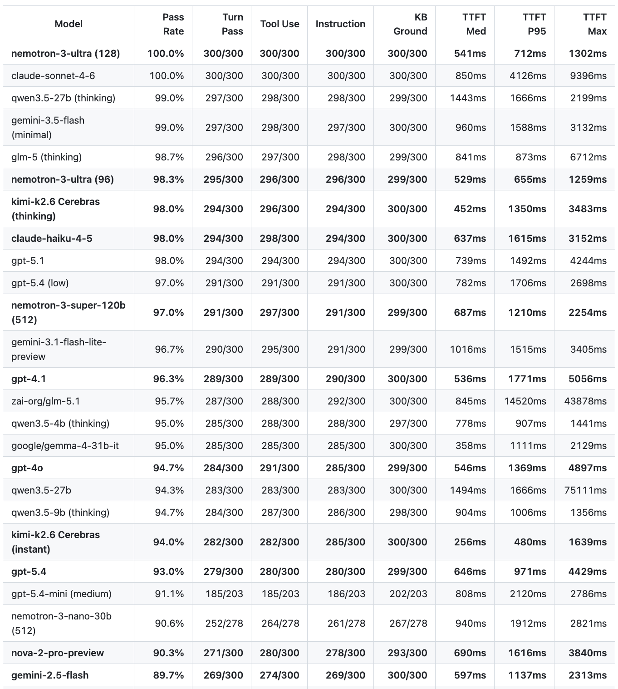
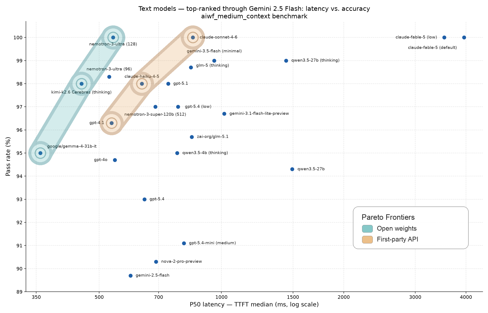
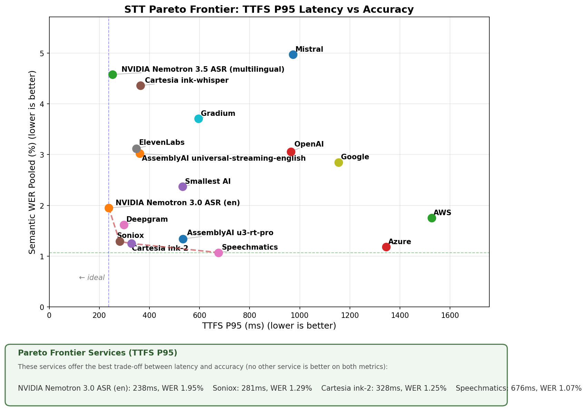
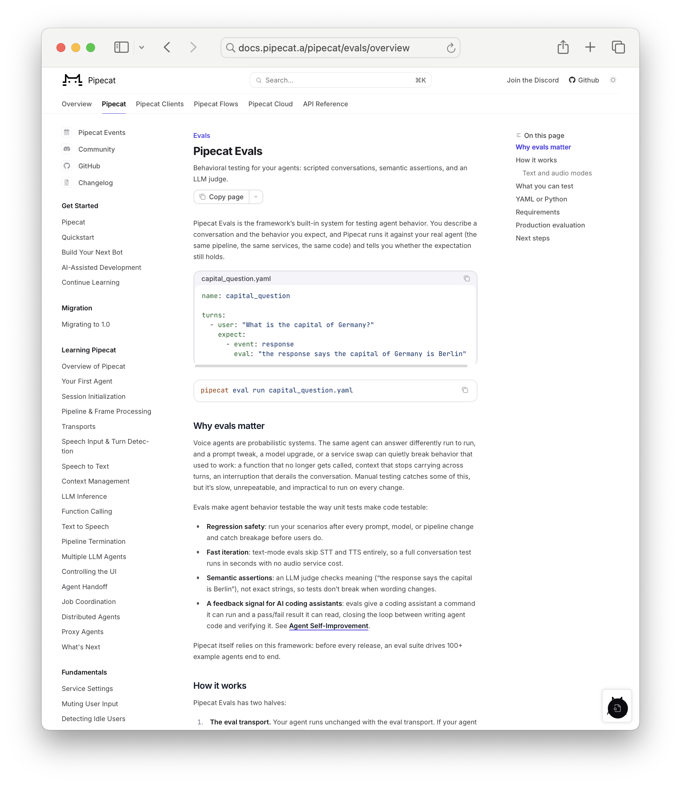
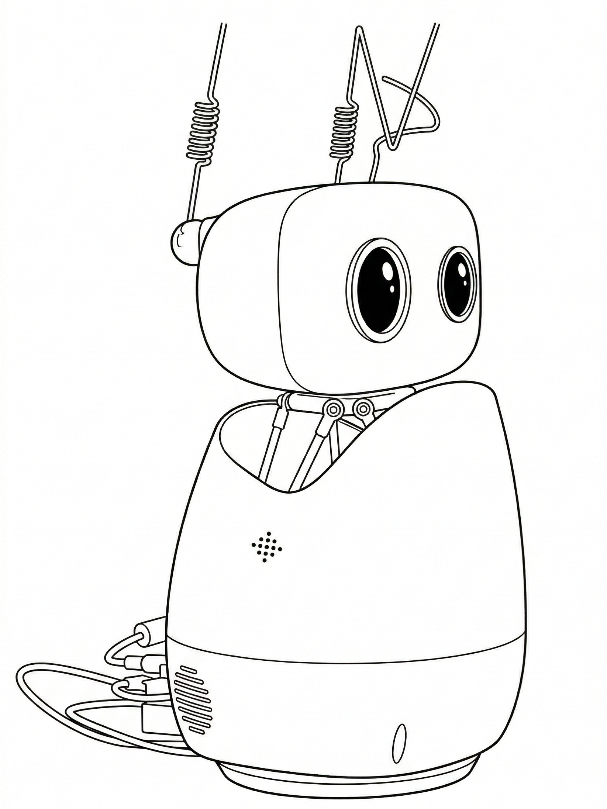

1. 2026年の会話型音声AI
LLMは優れた会話の相手です。
ChatGPTやClaudeと自由形式の対話にある程度の時間を費やしたことがあれば、LLMと話すことはかなり自然に感じられ、幅広く役立つという直感をお持ちでしょう。
LLMは、非構造化情報を構造化データに変換することも得意です。[1]
音声AIエージェントは、会話と、非構造化データからの構造抽出という、これら2つのLLMの能力を活用して、新しい種類のユーザー体験を生み出します。
[1] ここでは、一部のLLMが備える「構造化出力」機能という狭い意味ではなく、広い意味でこの言葉を使っています。
音声AIは今日、幅広いビジネスの場面で導入されています。例えば：
- 医療機関の受診前における患者データの収集、
- インバウンドの営業リードへのフォローアップ、
- ますます多様化するコールセンター業務への対応、
- 採用面接やユーザーリサーチのインタビュー、
- 企業間のスケジュール調整やロジスティクスの調整、そして
- ほぼあらゆる種類の中小企業での電話応対。
コンシューマー側でも、会話型の音声（および映像）AIがソーシャルアプリケーションやゲームに入り始めています。また、開発者たちは毎日GitHubやソーシャルメディアで個人の音声AIプロジェクトや実験を共有しています。
2. 音声AIは単なる「音声」ではない
音声AIに携わる我々は、次のようなことを考え続けてきました：
- マルチモーダルエージェント、
- マルチモデルオーケストレーション、
- 非同期ツール呼び出し、
- コンテキストのコンパクション、
- ローカル/クラウドのハイブリッド推論、
- プログレッシブな「スキル」のロード、
- エージェントメモリ、
- 継続学習、
- サンドボックス、そして
- 動的に生成されるユーザーインターフェース
それも……2023年からです！
結局のところ、優れた音声エージェントを構築するには、優れたエージェント全般の構築の核心となる多くの事柄を解明する必要があったのです。
しかも、超低レイテンシの応答性を最適化しながらそれを行う必要がありました。（人間は、音声エージェントが会話の中で他の人間と同じ速さで応答することを求めます。）
今日、音声AIは、エージェントの最初の大規模採用者であったエンタープライズのユースケースを超えて広がりつつあります。
我々は「ファスト＆スロー」型のエージェントオーケストレーションのための新しい抽象化を構築しています。リアルタイム映像モデルを構築するチームは、2023年と2024年に音声モデルが遂げたのと同じような進歩を遂げつつあります。デスクトップ、コーディングエージェント、あらゆる種類のコパイロットとやり取りするために、日々音声入力を使う人が増え続けています。
本ガイドでは、主に「音声エージェント」を支えるコア技術に焦点を当てます。しかし、新しいエージェントアーキテクチャ、新しいユーザーインターフェース、マルチエージェントオーケストレーションに興味があるなら、世界中の音声AI開発者コミュニティが数多くの革新的な取り組みを行っています。
3. 本ガイドについて
本ガイドは、音声AIの最先端のスナップショットです。[2]
本番環境で使える音声エージェントの構築は複雑です。多くの要素は、ゼロから実装するのが容易ではありません。音声AIアプリを構築する場合、本書で論じる多くの事柄についてフレームワークに頼ることになるでしょう。しかし、すべてをゼロから構築するかどうかにかかわらず、各要素がどのように組み合わさるかを理解しておくことは有益だと我々は考えています。
本ガイドは、Sean DuBois氏のオープンソース書籍WebRTC For the Curiousに触発されて作られました。この本は、4年前の初版公開以来、多くの開発者がWebRTCを習得する助けとなってきました。[3]
本書の音声AIコード例には、オープンソースフレームワークのPipecatを使用しています。[4] Pipecatは最も広く使われている音声AIフレームワークであり、AWSやNVIDIAのチーム、大手AIラボのすべて、ServiceNowのようなFortune 500企業、そして何千ものスタートアップ、スケールアップ企業、個人開発者がコードベースを活用し、貢献しています。
本書では、商用の製品やサービスを推奨するのではなく、一般的なアドバイスを提供するよう心がけました。特定のベンダーに言及している場合、それは音声AI開発者の大部分に使われているためです。
3.1. モデルリリースの動向を追う
急速に変化するAIモデルの状況を把握し続けるのは大きな課題です。音声エージェントに関連するモデルのリリースが絶え間なく続いています。
ベンチマークは、モデルの進歩を追跡し、特定のモデルを本格的に評価する時間を割くべきかどうかを判断するための重要な手段です。残念ながら、広く知られているモデルベンチマークのほとんどは音声AIには役立ちません。音声エージェントは常にマルチターンであるため、長いマルチターンの性能をテストしないベンチマークでは、実際の会話でモデルがどう振る舞うかは分かりません。音声エージェントにとってレイテンシは非常に重要ですが、ほとんどのベンチマークはTTFT（最初のトークンまでの時間）や類似の指標を報告していません。
モデルリリースとファーストパーティAPIの性能を追跡するために我々が使っているベンチマークは以下の通りです：
[2] 本ガイドはもともと2025年2月のAI Engineering Summitに向けて執筆したものです。本改訂版は2026年6月に公開されました。
[3] webrtcforthecurious.com — WebRTCは音声AIに関連する技術です。後ほどWebSocketsとWebRTCのセクションで論じます。
[4] Pipecatには100を超えるAIモデルとサービスのインテグレーションがあり、ターン検出や割り込み処理などの最先端の実装も備えています。Pipecatを使えば、WebSockets、WebRTC、HTTP、電話を介してユーザーと通信するコードを書くことができます。Pipecatには、Twilio、Telnyx、LiveKit、Dailyをはじめとするさまざまなインフラプラットフォーム向けのトランスポート実装が含まれています。JavaScript、React、iOS、Android、C++向けのクライアントサイドPipecat SDKもあります。
4. 会話型AIの基本ループ
音声AIエージェントの基本的な「果たすべき仕事」は、人間の発話を聞き取り、何らかの有用な形で応答し、そのシーケンスを繰り返すことです。
今日の本番環境の音声エージェントは、ほぼすべてが非常によく似たアーキテクチャを持っています。音声エージェントのプログラムはクラウドで実行され、音声→音声のループをオーケストレーションします。エージェントプログラムは複数のAIモデルを使用し、一部はエージェントのローカルで実行され、一部はAPI経由でアクセスされます。また、エージェントプログラムはLLMのFunction Callingや構造化出力を使ってバックエンドシステムと統合します。
- 音声はユーザーのデバイスのマイクで収音され、エンコードされ、ネットワーク経由でクラウド上で実行されている音声エージェントプログラムに送信されます。
- 入力音声は文字起こしされ、LLMへのテキスト入力が作られます。
- テキストはコンテキスト — プロンプト — に組み立てられ、LLMによって推論が実行されます。推論の出力は、多くの場合エージェントプログラムのロジックによってフィルタリングまたは変換されます。[5]
- 出力テキストはText-to-speechモデルに送られ、音声出力が生成されます。
- 音声出力はユーザーに送り返されます。
お気づきのように、音声エージェントプログラムはクラウドで動作しており、Text-to-speech、LLM、Speech-to-textの処理もクラウドで行われています。長期的には、より多くのAIワークロードがオンデバイスで実行されるようになると我々は予想しています。しかし今日のところ、本番環境の音声AIは非常にクラウド中心です。理由は2つあります：
- 音声AIエージェントは、複雑なワークフローを低レイテンシで確実に実行するために、利用可能な最良のAIモデルを使う必要があります。エンドユーザーのデバイスには、最良のSTT、LLM、TTSモデルを許容可能なレイテンシで実行するのに十分なAI計算能力がまだありません。
- 今日の商用音声AIエージェントの大半は、電話を介してユーザーと通信しています。電話の場合、エンドユーザーのデバイスというものは存在しません — 少なくとも、コードを実行できるデバイスは！
それでは、このエージェントオーケストレーションの世界に飛び込んで（dive）[6]、次のような疑問に答えていきましょう：
- 音声AIエージェントに最適なLLMはどれか？
- 長時間のセッション中に会話のコンテキストをどう管理するか？
- 音声エージェントを既存のバックエンドシステムにどう接続するか？[7]
- 音声エージェントがうまく機能しているかをどう知るか？

[5] 例えば、よくあるLLMのエラーや安全性の問題を検出するためです。
[6] Let's delve（delveしましょう） — 編注
[7] 例えば、CRM、独自のナレッジベース、コールセンターシステムなどです。
5. コア技術とベストプラクティス
5.1. レイテンシ
音声エージェントの構築は、ほとんどの点で他の種類のAIエンジニアリングと似ています。テキストベースのマルチターンAIエージェントを構築した経験があれば、その領域での経験の多くは音声でも役立つでしょう。
大きな違いはレイテンシです。
人間は通常の会話で素早い応答を期待します。500msの応答時間が一般的です。長い間合いは不自然に感じられます。
音声AIエージェントを構築するなら、エンドユーザーの視点からレイテンシを正確に測定する方法を学ぶ価値があります。
AIプラットフォームが、真の「音声から音声まで（voice-to-voice）」の測定値ではないレイテンシを提示しているのをよく見かけるでしょう。これは一般的に悪意によるものではありません。プロバイダー側から見ると、レイテンシを測定する簡単な方法は推論時間を測定することです。そのため、プロバイダーはレイテンシをそのように考えることに慣れています。しかし、このサーバー側の視点では、音声処理、エンドポイント検出の遅延、ネットワーク転送、オペレーティングシステムのオーバーヘッドが考慮されていません。
音声から音声までのレイテンシは、手動で簡単に測定できます。
会話を録音し、その録音を音声エディタに読み込み、音声波形を見て、ユーザーの発話の終わりからLLMの発話の始まりまでを測定するだけです。
本番環境向けの会話型音声アプリケーションを構築する場合は、この方法でレイテンシの数値をときどきサニティチェックする価値があります。テストの際に、擬似的なネットワークパケットロスやジッタを加えればなお良いでしょう！
真の音声から音声までのレイテンシをプログラムで測定するのは困難です。レイテンシの一部はオペレーティングシステムの奥深くで発生します。そのため、ほとんどの可観測性ツールは最初の（音声）バイトまでの時間のみを測定します。これは音声から音声までの合計レイテンシの妥当な代用指標ですが、繰り返しになりますが、エンドポイント検出のばらつきやネットワークの往復時間など、測定していない要素は、追跡する手段がなければ問題になり得ることに注意してください。
会話型AIアプリケーションを構築しているなら、音声から音声までのレイテンシ1,500 msは目指すべき重要な目標です。以下は、ユーザーのマイクからクラウドへ、そして戻ってくるまでの音声から音声までの往復の内訳です。これらの数値はごく典型的なもので、合計は約1,200 msです。したがって1,500 msの達成は容易ではありません — 電話プロバイダーが数百ミリ秒を追加すれば予算オーバーです — が、今日の最高のAIモデルとPipecatのような効率的なフレームワークを使えば達成可能です。
| ステージ | 時間（ms） |
|---|---|
| macOSマイク入力 | 40 |
| opusエンコーディング | 21 |
| ネットワークスタックと伝送 | 10 |
| パケット処理 | 2 |
| ジッターバッファ | 40 |
| opusデコーディング | 1 |
| 文字起こしとエンドポイント検出 | 300 |
| LLM TTFB | 650 |
| 文の集約 | 20 |
| TTS TTFB | 120 |
| opusエンコーディング | 21 |
| パケット処理 | 2 |
| ネットワークスタックと伝送 | 10 |
| ジッターバッファ | 40 |
| opusデコーディング | 1 |
| macOSスピーカー出力 | 15 |
| 合計（ms） | 1293 |
音声から音声までの会話の往復 — レイテンシの内訳。
我々は、すべてのモデルを同一のGPU対応クラスタ内でホスティングし、すべてのモデルをスループットではなくレイテンシ向けに最適化することで、音声から音声までのレイテンシを500 msまで下げたPipecatエージェントを実証してきました。
レイテンシは音声ユースケースにとって非常に重要であるため、このガイド全体を通してレイテンシの話題が頻繁に登場します。

{kind=link}
{kind=link}
5.2. 音声ユースケースのためのLLM
2023年3月のGPT-4のリリースが、現在の音声AI時代の幕開けとなりました。GPT-4は、柔軟なマルチターン会話を維持でき、かつ有用な作業を実行できるほど正確にプロンプトで指示できる初のLLMでした。
今日、音声エージェントで最も広く使われているモデルはGPT-4.1、GPT-5.1、そしてGemini 2.5 Flashです。
これらのモデルは以下を兼ね備えています。
- 低レイテンシ。
- 優れた指示追従。[8]
- 信頼性の高いFunction Calling。[9]
- ハルシネーションやその他の不適切な応答の発生率の低さ。
- 安定したパーソナリティとトーン。
- 比較的低いコスト。
[8] モデルに特定のことをさせるプロンプトを、どれだけ簡単に書けるかということです。
[9] 音声AIエージェントはFunction Callingに大きく依存しています。
最近では、いくつかのモデルファミリーが、知能とレイテンシのパレートフロンティアにおいてGPTおよびGeminiモデルファミリーに挑んでいます。
GPT-4.1とGemini 2.5 Flashがどちらも比較的古いモデルであることにお気づきでしょう。両ファミリーの新しいモデルは「リーズニング（推論）」モデルです。これらはコンテンツトークンの生成がはるかに遅くなります。Gemini 3モデルは特に遅いため、知能ベンチマークでは良い成績を収めているものの、我々は通常、音声エージェントには使用できません。
とはいえ、音声エージェント構築の黎明期から、我々の考え方は進化してきました。2024年には、エージェントが「人間と同じ速さで」応答できると人々を説得することに多くの時間を費やしました。現在では、幅広いユースケースで実世界の音声エージェントをデプロイした経験から、多くの実証的な証拠が得られています。人々は、1,500 ms以内に応答するエージェントとの会話に満足しています。
ただし、レイテンシのスパイクを発生させないこと、そしてツール呼び出しなどの機能をエージェントに追加していく際にレイテンシが1,500 msを超えてじわじわと増加しないようにすることが極めて重要です。そして、レイテンシは音声ユースケースにとって非常に重要であるため、このガイド全体を通してレイテンシの話題が頻繁に登場します。
| モデル | TTFT中央値（ms） | P95 TTFT（ms） |
|---|---|---|
| GPT-4.1 | 536 | 1771 |
| Gemini 2.5 Flash | 597 | 1137 |
| Claude 4.5 Haiku | 637 | 1615 |
| GPT-5.1 | 739 | 1492 |
| Nemotron 3 Ultra（セルフホスト） | 541 | 712 |
大まかな経験則として、LLMの最初のトークンまでの時間が600 ms以下であれば、ほとんどの音声AIユースケースには十分な速さです。
P95の時間も同様に重要である点に注意してください。最近では、どのプロバイダーのパブリックAPIも、我々が望む水準よりも悪いP95の時間を示しています。
大規模な運用であれば、AWS、GCP、Azureからコミット済みの推論コンピュートを購入することで、より低いレイテンシを実現できます。同様に、常時稼働のGPUインスタンスのベースラインコストを正当化できるだけの安定した利用量があれば、オープンウェイトモデル（例えばNVIDIA Nemotron）のセルフホスティングも興味深い選択肢になります。
5.2.1 コスト比較
コストと言えば、トークン単価は定期的かつ急速に下がり続けています。さらに、OpenAI、Google、Anthropicはいずれも入力トークンのキャッシングをサポートするようになり、マルチターン会話のコストをさらに削減しています。（音声エージェントの会話はすべてマルチターンです。）
| モデル | 3分間の会話 | 10分間の会話 | 30分間の会話 |
|---|---|---|---|
| Gemini 2.5 Flash | $0.002 | $0.006 | $0.024 |
| Claude 4.5 Haiku | $0.006 | $0.019 | $0.075 |
| GPT-5.1 | $0.008 | $0.025 | $0.100 |
| GPT-4.1 | $0.019 | $0.069 | $0.318 |
さまざまな長さの英語での会話における、おおよそのLLMコスト。2,000トークンのシステムプロンプトを想定しています。
音声エージェントの総コスト（LLMコストだけではなく）の見積もりに関する議論は後述を参照してください。
5.2.2 オープンソース／オープンウェイト
音声AIのユースケースは要求水準が高いため、リアルタイムのレイテンシで動作できる最良のモデルを使うのが一般的に理にかなっています。
このため、音声AIで使われるモデルはプロプライエタリなモデルに限られてきました。
しかし、オープンウェイトモデルは重要なベンチマークでクローズドモデルに匹敵し始めています。オープンモデルは音声エージェントでできることを広げてくれるので、これは喜ばしいことです。オープンモデルを使えば、推論スタックのカスタマイズ（例えばスループットよりレイテンシを優先する）、自社データでのファインチューニング、自社インフラ上でのモデル実行が可能になります。
最近、有望なオープンモデルがいくつかリリースされており、我々は音声エージェントやタスクサブエージェントで使い始めています。NVIDIA Nemotron 3モデルファミリー、Kimi 2.6、Gemma 4、そしてGLM 5です。
ベンチマークチャートとパレートフロンティア図については後述を参照してください。
[11] ユースケースに合わせてLLMをファインチューニングする予定であれば、オープンウェイトモデルは非常に良い出発点です。ファインチューニングについては後述します。
5.2.3 speech-to-speech（音声→音声）モデルはどうか？
speech-to-speech LLMは、テキストではなく音声でプロンプトを与えることができ、音声出力を直接生成できます。これにより、音声エージェントのオーケストレーションループからSpeech-to-textとText-to-speechの部分が不要になります。
speech-to-speechモデルの潜在的な利点は次のとおりです。
- より低いレイテンシ。
- 人間の会話のニュアンスを理解する能力の向上。
- より自然な音声出力。
OpenAI、Google、AWSはいずれも、自社のAPI経由で提供されるspeech-to-speechモデルを提供しています。NVIDIAをはじめとするいくつかの研究機関も、speech-to-speechのデモや研究成果を公開しています。
speech-to-speechモデルは、テキストモードのLLMほど確実に指示に従ったりツールを呼び出したりできません。また、より遅く、より高価で、設定の自由度が低く、実世界のエージェントシステムへの統合も難しくなります。
一方で、今日の最高のspeech-to-speechモデルは実に自然に聞こえます。OpenAIのgpt-realtimeモデルは、まさに音声AIの未来を先取りしたかのように聞こえます。
今日のspeech-to-speechモデルとテキストモードLLMの比較は次のとおりです。
- speech-to-speechモデルでは理論上はより低いレイテンシが可能ですが、音声はテキストよりも多くのトークンを消費します。トークンコンテキストが大きくなるほど、LLMの処理は遅くなります。実際のところ、今日では、OpenAIとGoogleのspeech-to-speechモデルはどちらも、十分にチューニングされたカスケード型（マルチモデル）の音声エージェントより遅いのです。
- 理解力の向上は、これらのモデルの実際の利点であるように見えます。これはGemini 2.5 FlashおよびGemini 3 Flashの音声入力で特に顕著です。
- より自然な音声出力は、今日でもはっきりと知覚できます。テストでは、ほとんどのユーザーが、最高のspeech-to-speechモデルの出力を、スタンドアロンのText-to-speechモデルの出力よりも自然だと評価しています。
- speech-to-speechモデルのAPIは、本番環境の音声エージェント開発に必要な水準と比べて柔軟性が大幅に不足しています。エンタープライズ向け音声エージェントは、コンテキストの操作や要約を数多く行う必要があります。これはOpenAI Real-time APIでは可能ですが、APIが会話コンテキストの独自の内部バージョンを保持しているため、その管理は厄介です。Gemini Live APIでは高度なコンテキスト操作はまったく不可能であり、本番環境にはまだ使えないアルファリリースと見なすのが妥当です。
- speech-to-speech APIは、高速で信頼性の高い文字起こしを提供しません。コンプライアンス、下流の評価（Evals）、あるいはアプリケーションUIでの利用のためにユーザー入力の正確な文字起こしが必要な場合、speech-to-speech APIの文字起こしでは不十分かもしれません。
- 入力が複数言語の混在した発話であるユースケースでは、speech-to-speechモデルはマルチモデルパイプラインよりはるかに優れた性能を発揮します。例えば語学学習アプリケーションは、speech-to-speechモデルのこの強みから大きな恩恵を受けます。
また、speech-to-speech APIがまだ比較的高価であることも注目に値します。我々は、OpenAIの非常に優れた自動トークンキャッシング機能を織り込んだうえで、セッションの長さに応じてコストがどのように変化するかを示すOpenAI Real-time API向けの計算ツールを作成しました。OpenAI Real-time APIで構築したエージェントは、GPT-4.1で構築したエージェントの3〜5倍のコストがかかります。
speech-to-speech分野では今後も進歩が続くと予想しています。しかし、本番環境の音声AIアプリケーションがマルチモデルアプローチからspeech-to-speech APIの利用へどれだけ早く移行するかは、まだ未知数です。
[14] Realtime APIに関する詳細なノートを参照

OpenAI Realtime APIコスト計算ツール
5.3. LLMベンチマーク
5.3.1 知能／レイテンシのパレートフロンティア
エージェントにどのLLMを使うかを選ぶ際には、知能、レイテンシ、コストのすべてが重要な要素になります。
音声エージェントではレイテンシがとりわけ重要であるため、望むほど「賢く」はないもののTTFTが速いモデルを使う、というトレードオフを迫られることがよくあります。
これが特に当てはまるのは、過去2年間、基盤モデルの研究機関がリーズニングモデルに注力してきたためです。リーズニングモデルは、実際のコンテンツを生成する前に「思考（thinking）」トークンを出力します。
リーズニングモデルにおいてユーザーから見える応答レイテンシは、最初のトークンまでの時間ではありません。最初の非思考トークンまでの時間です。
我々は、困難な実世界の音声エージェントシナリオでLLMの性能をテストする30ターン会話ベンチマークを運用しています。
我々は、最近の2つのトレンドを大きな関心を持って追跡してきました。
2025年後半以降、新しいモデルがこのベンチマークを飽和させ始めました。しかし、これらの新しいモデルはいずれも音声ユースケースには遅すぎます。リアルタイムの音声会話にモデルを使うには、TTFT（最初の非思考トークンまでの時間）が700msより速い必要があります。それでも、この難しいベンチマークを飽和させたことは大きなマイルストーンです。
今年は、オープンモデルの新たな性能の飛躍が見られました。Nemotron 3 Ultraは、このベンチマークで100%のスコアを達成した初のオープンモデルです。また、オープンかプロプライエタリかを問わず、ベンチマークを飽和させ、かつ700ms未満のTTFTを実現した初のモデルでもあります。
現在、ベンチマークチャートには2つのパレートフロンティアが存在します。Nemotron 3 Ultra（セルフホスト）、Kimi 2.6（Cerebrasでホスティング）、Gemma 4 31b（Lilacでホスティング）がオープンモデルのパレートフロンティアを形成しています。GPT-4.1、Claude Haiku 4.5、Claude Sonnet 5.6は、それとは別のプロプライエタリモデル／ファーストパーティAPIのフロンティアを形成しています。
レイテンシが重要なユースケースでは、オープンモデルがクローズドモデルを上回る性能を発揮します。
ここでの注意点は、セルフホストするか、Cerebras や Lilac のような新しいプラットフォームに相当な推論ボリュームをコミットする必要があることです。一方で、オープンモデルを使うことで、ファインチューニングやカスタマイズといった別の機会も開けます。


5.4. Speech-to-text
Speech-to-text は音声AIの「入力」段階です。Speech-to-text は一般に文字起こしまたは ASR（自動音声認識）とも呼ばれます。
音声AIのユースケースでは、非常に低い文字起こしレイテンシと非常に低い語誤り率が必要です。
今日では、非常に低いレイテンシで優れた精度を実現する文字起こしモデルが数多く存在します。
5.4.1 STTのパレートフロンティア
我々は、実際の音声エージェントの構成と実データでモデルをテストする speech-to-text ベンチマークを維持しています：
https://github.com/pipecat-ai/stt-benchmark/
チャートを見ると、NVIDIA、Deepgram、Soniox、Cartesia、AssemblyAI、Speechmatics のモデルがいずれも極めて高い性能を発揮しており、パレートフロンティアのクラスターを形成していることがわかります。
Deepgram はリアルタイム文字起こしの長年のリーダーです。Soniox は幅広い言語にわたる低レイテンシの文字起こしモデルを提供しています。Speechmatics はリアルタイム、放送、オンデバイスのアプリケーション向けに音声モデルをトレーニングしている英国の企業です。AssemblyAI はマルチターンのコンテキスト引き継ぎなど革新的な機能を提供しています。Cartesia の text-to-speech モデルは音声生成市場で大きなシェアを獲得しており、現在は競争力のある speech-to-text モデルも提供し始めています。NVIDIA のモデルは完全にオープンソースです。
これらのモデルはすべて、API 経由で、または顧客が自社インフラで実行できる Docker コンテナとして利用可能です。Deepgram のモデルは AWS SageMaker 経由でも利用できます。

パレートフロンティアのサービス（TTFS P95）
ほとんどの人は、まず API 経由で speech-to-text モデルを使い始めます。スケーラブルな GPU クラスターの管理は継続的に大きな DevOps 業務となるため、API から自社インフラでのモデルホスティングに移行することは、十分な理由なしに行うべきではありません。しかし、セルフホスティングを行う正当な理由も確かにあります。たとえば以下のような理由です：
- 音声と文字起こしデータをプライベートに保つため。会社のポリシーで、ユーザーデータを自社インフラの外に送信することが禁止されている場合があります。特定の地理的リージョン内でのみデータを処理するという法的要件がある場合もあります。
- レイテンシの削減。API プロバイダーが、ユーザーのいるリージョンに推論サーバーを持っていない場合があります。これは音声エージェントにとって重大な問題です。ヨーロッパから米国へのネットワーク往復時間は約250 ms、インドからは約350 msです。
いくつかのプロバイダーはファインチューニングサービスも提供しており、ユースケースに比較的珍しい語彙、話し方、アクセントが含まれる場合、エラー率を下げるのに役立ちます。
自社データでのファインチューニングも、NVIDIA のオープンモデルの利用を検討する良い理由です。
5.4.2 プロンプティングはLLMの助けになります。
文字起こしエラーの大部分は、リアルタイムストリームにおいて文字起こしモデルが利用できるコンテキストが非常に少ないことに起因します。
今日のLLMは、文字起こしエラーを回避できるほど賢くなっています。LLMが推論を行う際には、会話の全コンテキストにアクセスできます。したがって、入力がユーザー発話の文字起こしであることをLLMに伝え、それを踏まえて推論するよう指示できます。
You are a helpful, concise, and reliable voice assistant. Your primary goal is to understand the user's spoken requests, even if the speech-to-text transcription contains errors. Your responses will be converted to speech using a text-to-speech system. Therefore, your output must be plain, unformatted text.
When you receive a transcribed user request:
1. Silently correct for likely transcription errors. Focus on the intended meaning, not the literal text. If a word sounds like another word in the given context, infer and correct. For example, if the transcription says "buy milk two tomorrow" interpret this as "buy milk tomorrow".
2. Provide short, direct answers unless the user explicitly asks for a more detailed response. For example, if the user says "what time is it?" you should respond with "It is 2:38 AM". If the user asks "Tell me a joke", you should provide a short joke.
3. Always prioritize clarity and accuracy. Respond in plain text, without any formatting, bullet points, or extra conversational filler.
4. If you are asked a question that is time dependent, use the current date, which is February 3, 2025, to provide the most up to date information.
5. If you do not understand the user request, respond with "I'm sorry, I didn't understand that."
Your output will be directly converted to speech, so your response should be natural-sounding and appropriate for a spoken conversation.
音声AIエージェント向けのプロンプト文言の例。
5.5. Text-to-speech
Text-to-speech は、音声→音声処理ループの出力段階です。
音声AI開発者は、以下に基づいて音声モデル／サービスを選択します：
- 音声がどれだけ自然に聞こえるか（全体的な品質）[16]
- レイテンシ[17]
- コスト
- 言語サポート
- 単語レベルのタイムスタンプのサポート
- 声、アクセント、発音のカスタマイズ機能
[16] 発音、イントネーション、ペース、強勢、リズム、感情価。
[17] 最初のオーディオバイトまでの時間。
音声の選択肢は2024年と2025年に大幅に拡大しました。新しいスタートアップが登場し、最高クラスの音声品質は大きく向上し、すべてのプロバイダーがレイテンシを改善しました。
speech-to-text と同様、大手クラウドプロバイダーはいずれも text-to-speech 製品を提供しています。[18]しかし、ほとんどの音声AI開発者はそれらを使っていません。現在はスタートアップのモデルの方が優れているからです。
[18] Azure AI Speech、Amazon Polly、Google Cloud Text-to-Speech。
リアルタイムの会話型音声モデルで最も支持を集めているラボは（アルファベット順に）以下の通りです：
- Cartesia – 革新的な状態空間モデルアーキテクチャを採用しています。
- Deepgram – レイテンシと低コストを重視しています。Deepgram の文字起こしモデルは、音声AI向けの低レイテンシ・高精度MLモデルの草分けでした。
- ElevenLabs – 感情表現とコンテキストに応じたリアリズムを重視しています。
- Gradium – 世界で最も革新的な音声モデル研究の一部を生み出してきたフランスの非営利ラボ Kyutai の商用スピンアウトです。
- Inworld – ビデオゲーム向けAI技術のイノベーションにルーツを持ちます。
4社はいずれも強力なモデル、経験豊富なエンジニアリングチーム、安定した高性能な API を備えています。Cartesia、Deepgram、Gradium のモデルは自社インフラにデプロイできます。
| 1分あたりのコスト（概算） | TTFA 中央値（ms） | P95 TTFA（ms） | |
|---|---|---|---|
| Cartesia Sonic 3.5 | $0.028 | 195 | 240 |
| Deepgram Aura-2 | $0.024 | 310 | 600 |
| ElevenLabs Turbo v2.5 | $0.050 | 330 | 670 |
| Gradium | $0.032 | 235 | 320 |
| Inworld TTS 1.5 Max | $0.009 | 337 | 560 |
1分あたりの概算コスト（大規模利用時）と最初のオーディオまでの時間の指標 – 2025年6月。コストはコミットするボリュームと使用する機能によって異なる点に注意してください。
speech-to-text と同様、非英語の音声モデルには品質とサポートに大きなばらつきがあります。非英語のユースケース向けに音声AIを構築する場合は、より広範なテストが必要になるでしょう。満足できるソリューションを見つけるために、より多くのサービスとより多くの音声をテストすることになります。
すべての音声モデルは、時に単語の発音を誤りますし、固有名詞や珍しい単語の発音を必ずしも知っているとは限りません。
一部のサービスは発音を制御する機能を提供しています。テキスト出力に特定の固有名詞が含まれることが事前にわかっている場合、これは有用です。音声サービスが音素による制御をサポートしていない場合は、特定の単語について「読み方どおり」の綴りを出力するようLLMにプロンプトで指示できます。たとえば、NVIDIA の代わりに in-vidia とする、といった具合です。
Replace "NVIDIA" with "in vidia" and replace
"GPU" with "gee pee you" in your responses.
LLMのテキスト出力を通じて発音を制御するプロンプト文言の例
会話型の音声ユースケースでは、ユーザーが聞いたテキストを追跡できることが、正確な会話コンテキストを維持する上で重要です。これには、モデルが音声に加えて単語レベルのタイムスタンプメタデータを生成すること、そしてそのタイムスタンプデータから元の入力テキストへ逆向きに再構築できることが必要です。これは音声モデルにとって比較的新しい機能です。上の表のモデルのうち、ElevenLabs Flash を除くすべてが単語レベルのタイムスタンプをサポートしています。
{
"type": "timestamps",
"context_id": "test-01",
"status_code": 206,
"done": false,
"word_timestamps": {
"words": ["What's", "the", "capital", "of", "France?"],
"start": [0.02, 0.3, 0.48, 0.6, 0.8],
"end": [0.3, 0.36, 0.6, 0.8, 1]
}
}
Cartesia API による単語レベルのタイムスタンプ。
加えて、堅牢なリアルタイムストリーミングAPIがあると非常に助かります。会話型音声アプリケーションは、複数のオーディオ推論を並行してトリガーすることがよくあります。音声エージェントのコードは、進行中の推論を中断できること、そして各推論リクエストを1つの出力ストリームに対応付けられることが必要です。音声モデルプロバイダーのストリーミングAPIはいずれも比較的新しく、現在も進化を続けています。
音声モデルの進歩は2026年も続くと我々は予想しています。
5.6. オーディオ処理
優れた音声AIプラットフォームやライブラリは、オーディオのキャプチャと処理の複雑さをほぼ隠蔽してくれます。しかし、複雑な音声エージェントを構築していると、いずれオーディオ処理のバグやコーナーケースにぶつかることになります。[19]そこで、オーディオ入力パイプラインを簡単に見ておく価値があります。
[19] …これはソフトウェアのあらゆる物事に、そしておそらく人生のほとんどの物事にも当てはまります。
5.6.1 マイクと自動利得制御（AGC）
今日のマイクは、大量の低レベルソフトウェアと結合した、極めて洗練されたハードウェアデバイスです。これは通常は素晴らしいことです。モバイルデバイス、ノートPC、Bluetooth イヤホンに内蔵された小さなマイクから、素晴らしいオーディオが得られます。
しかし、この低レベルソフトウェアが我々の望む動作をしないこともあります。特に、Bluetooth デバイスは音声入力に数百ミリ秒のレイテンシを加えることがあります。これは音声AI開発者にはほぼ制御できません。しかし、ユーザーのオペレーティングシステムや入力デバイスによってレイテンシが大きく変わりうることは、知っておく価値があります。

ほとんどのオーディオキャプチャパイプラインは、入力信号にある程度の自動利得制御（AGC）を適用します。これも通常は望ましい動作です。ユーザーとマイクの距離などを補正してくれるからです。自動利得制御の一部は無効化できることが多いですが、コンシューマー向けデバイスでは通常、完全には無効化できません。
5.6.2 エコーキャンセレーション
ユーザーが電話を耳に当てていたり、ヘッドホンを装着していたりする場合は、ローカルのマイクとスピーカー間のフィードバックを心配する必要はありません。しかし、スピーカーフォンで話していたり、ヘッドホンなしでノートPCを使っていたりする場合は、優れたエコーキャンセレーションが極めて重要です。
エコーキャンセレーションはレイテンシに非常に敏感なため、（クラウドではなく）デバイス上で実行する必要があります。今日では、優れたエコーキャンセレーションが電話インフラのスタック、Webブラウザ、WebRTC のネイティブモバイル SDK に組み込まれています。[20]
したがって、音声AI、WebRTC、または電話向けの SDK を使っていれば、ほぼすべての実環境シナリオで「ちゃんと動く」と信頼できるエコーキャンセレーションが得られるはずです。独自の音声AIキャプチャパイプラインを構築している場合は、エコーキャンセレーションのロジックをどう統合するかを自分で考える必要があります。たとえば、WebSocket ベースの React Native アプリケーションを構築している場合、デフォルトではエコーキャンセレーションは一切ありません。[21]
[20] なお、Firefox のエコーキャンセレーションはあまり優れていません。音声AI開発者には、Chrome と Safari を主要プラットフォームとして開発し、時間が許せば Firefox を二次的なプラットフォームとしてテストするだけにすることをお勧めします。
[21] 我々は最近、ある方の React Native アプリのオーディオ問題のデバッグを手伝いました。根本原因は、音声AIや WebRTC の SDK を使っていなかったため、エコーキャンセレーションを自前で実装する必要があることに気づいていなかったことでした。
5.6.3 ノイズ抑制、音声、音楽
電話と WebRTC のオーディオキャプチャパイプラインは、ほぼ常にデフォルトで「音声モード」になっています。音声は音楽よりもはるかに強く圧縮でき、ノイズ低減やエコーキャンセレーションのアルゴリズムも狭帯域の信号の方が実装しやすいからです。
多くの電話プラットフォームは 8khz のオーディオしかサポートしていません。これは現代の基準では明らかに低品質です。この制限を持つシステムを経由してルーティングしている場合、打つ手はありません。ユーザーが品質に気づくかどうかはわかりません。ほとんどの人は電話の音質にあまり期待していないからです。
WebRTC は非常に高品質なオーディオをサポートしています。[22]WebRTC のデフォルト設定は通常、48khz のサンプルレート、シングルチャンネル、32 kbs の Opus エンコーディング、そして中程度のノイズ抑制アルゴリズムです。これらの設定は音声向けに最適化されています。幅広いデバイスと環境で機能し、音声AIには一般的に適切な選択です。
これらの設定では、音楽は良い音になりません！
WebRTC 接続で音楽を送る必要がある場合は、次のようにするとよいでしょう：
- エコーキャンセレーションをオフにする（ユーザーはヘッドホンを装着する必要があります）。
- ノイズ抑制をオフにする。
- 必要に応じて、ステレオを有効にする。
- Opus エンコーディングのビットレートを上げる（モノラルなら 64 kbs、ステレオなら 96 kbs または 128 kbs が良い目安です）。
[22] 高品質オーディオのユースケースの例：
- LLM 教師との音楽レッスン。
- 背景音や音楽を含むポッドキャストの収録。
- AI音楽をインタラクティブに生成する。
5.6.4 エンコーディング
エンコーディングとは、ネットワーク接続で送信するためにオーディオデータをどのようにフォーマットするかを指す総称です。[23]
[23]（あるいはファイルに保存するために。）
リアルタイム通信でよく使われるエンコーディングには次のものがあります：
- 16ビットPCM形式の非圧縮音声です。
- Opus — WebRTCおよび一部の電話システムで使用されます。
- G.711 — 幅広くサポートされている標準的な電話用コーデックです。
| コーデック | ビットレート | 品質 | ユースケース |
|---|---|---|---|
| 16-bit PCM | 384 kbps（モノラル 24 kHz） | 非常に高い（ほぼロスレス） | 音声録音、組み込みシステム、シンプルなデコードが重要な環境 |
| Opus 32 kbps | 32 kbps | 良い（音声向けに最適化された心理音響圧縮） | ビデオ通話、低帯域幅ストリーミング、ポッドキャスト配信 |
| Opus 96 kbps | 96 kbps | 非常に良い〜優秀（心理音響圧縮） | ストリーミング、音楽、音声アーカイブ |
| G.711 (8 kHz) | 64 kbps | 低い（帯域幅が限られ、音声中心） | レガシーVoIPシステム、電話、ファックス送信、ボイスメッセージ |
音声AIで最もよく使われる音声コーデック
この3つの選択肢の中では、Opusが群を抜いて優れています。OpusはWebブラウザに組み込まれており、低レイテンシのコーデックとしてゼロから設計され、非常に効率的です。また、幅広いビットレートで良好に動作し、音声用途と高忠実度用途の両方をサポートします。
16ビットPCMは「生の音声」です。PCM音声フレームは（サンプルレートとデータ型が正しく指定されていれば）ソフトウェアのサウンドチャネルに直接送ることができます。ただし、この非圧縮音声は、一般にインターネット接続を介して送信したいものではないことに注意してください。24khz PCMのビットレートは384 kbsです。これは十分に大きなビットレートであり、エンドユーザーデバイスからの現実の接続の多くでは、バイトをリアルタイムで届けるのに苦労するでしょう。
5.6.5 サーバーサイドのノイズ処理と話者分離
Speech-to-textモデルや音声活動検出（VAD）モデルは通常、一般的な環境ノイズ – 街の音、犬の鳴き声、マイク近くの大きなファンの音、キーボードのクリック音 – を無視できます。そのため、多くの人間同士のユースケースで極めて重要な従来型の「ノイズ抑制」アルゴリズムは、音声AIにとってはそれほど重要ではありません。
しかし、音声AIにとって特に価値のある音声処理が1つあります。それがプライマリ話者分離です。プライマリ話者分離は背景の話し声を抑制します。これにより文字起こしの精度を大幅に向上させることができます。
空港のような環境から音声エージェントに話しかける場面を考えてみてください。スマートフォンのマイクは、搭乗ゲートのアナウンスや通行人の話し声など、多くの背景音声を拾ってしまう可能性があります。LLMが見るテキストの文字起こしに、そうした背景の話し声を混ぜたくはないはずです！
あるいは、リビングルームでテレビやラジオをつけたままのユーザーを想像してみてください。人間は一般に小さな音量の背景の話し声を聞き流すのが得意なので、カスタマーサポートに電話をかける前にテレビやラジオを消そうとは必ずしも思わないものです。
自分の音声AIパイプラインで利用できる最良の話者分離モデルは、Krispが販売しています。ライセンスはエンタープライズユーザー向けで、安価ではありません。しかし、大規模な商用ユースケースでは、音声エージェントの性能向上がそのコストを正当化します。
OpenAIはRealtime APIの機能としてノイズ低減を提供しています。
pipeline = Pipeline(
[
transport.input(),
krisp_filter,
vad_turn_detector,
stt,
context_aggregator.user(),
llm,
tts,
transport.output(),
context_aggregator.assistant(),
]
)
Krisp処理エレメントを組み込んだPipecatパイプライン
5.6.6 音声活動検出
音声活動検出のステージは、ほぼすべての音声AIパイプラインに組み込まれています。VADは音声セグメントを「発話」と「非発話」に分類します。VADについては、後述のターン検出のセクションで詳しく説明します。
5.7. ネットワークトランスポート
5.7.1 WebSocketとWebRTC
WebSocketとWebRTCは、どちらもAIサービスの音声ストリーミングに使われています。
WebSocketはサーバー間のユースケースには最適です。また、レイテンシが最重要ではないユースケースにも問題なく使え、プロトタイピングや実験的な開発にもよく適しています。
クライアント・サーバー間のリアルタイムメディア接続には、本番環境でWebSocketを使うべきではありません。
ブラウザアプリやネイティブモバイルアプリを構築していて、会話に適したレイテンシの達成がアプリケーションにとって重要である場合は、アプリからの音声の送受信にはWebRTC接続を使うべきです。
エンドユーザーデバイスとの間のリアルタイムメディア配信にWebSocketを使う場合の主な問題は次のとおりです。
- WebSocketはTCP上に構築されているため、音声ストリームはヘッドオブラインブロッキングの影響を受けます。
- WebRTCで使われるOpus音声コーデックは、WebRTCの帯域幅推定およびパケットペーシング（輻輳制御）ロジックと密に結合しており、そのおかげでWebRTCの音声ストリームは、WebSocket接続であればレイテンシが蓄積してしまうような現実世界の幅広いネットワーク挙動に対して耐性を持ちます。
- Opus音声コーデックは非常に優れた前方誤り訂正を備えており、比較的高いパケットロスに対しても音声ストリームは耐性を持ちます。（ただしこれが役立つのは、ネットワークトランスポートが遅れて到着したパケットを破棄でき、ヘッドオブラインブロッキングを起こさない場合に限ります。）
- WebRTCの音声には自動的にタイムスタンプが付与されるため、再生ロジックも割り込みロジックも簡単に実装できます。
- WebRTCには、詳細なパフォーマンス統計およびメディア品質統計のためのフックが含まれています。優れたWebRTCプラットフォームであれば、詳細なダッシュボードや分析が提供されます。このレベルの可観測性をWebSocketで構築するのは、非常に困難か、ほぼ不可能です。
- WebSocketの再接続ロジックを堅牢に実装するのはかなり困難です。ping/ackのフレームワークを自前で構築する（あるいは、使用するWebSocketライブラリが提供するフレームワークを完全にテストして理解する）必要があります。TCPのタイムアウトや接続イベントの挙動は、プラットフォームによって異なります。
- 最後に、今日の優れたWebRTC実装には、非常に優れたエコーキャンセレーション、ノイズ低減、自動利得制御（AGC）が備わっています。
WebRTCの使い方は2通りあります。
- クラウド上のWebRTCサーバーを経由してルーティングする方法。
- クライアントデバイスと音声AIプロセスの間に直接接続を確立する方法。
多くの現実のユースケースでは、クラウドサーバー経由のルーティングの方が優れたパフォーマンスを発揮します（後述のネットワークルーティングを参照）。また、クラウドインフラは、直接接続では容易には、あるいはスケーラブルにはサポートできない多くの機能（複数参加者のセッション、電話システムとの統合、録音）を可能にします。
しかし、「サーバーレス」WebRTCも多くの音声AIユースケースによく適しています。PipecatはSmallWebRTCTransportクラスを通じてサーバーレスWebRTCをサポートしています。また、Hugging FaceのFastRTCのようなフレームワークは、完全にこのネットワーキングパターンを中心に構築されています。

5.7.2 HTTP
HTTPもまた、音声AIにとって依然として有用かつ重要です！HTTPはインターネット上のサービス相互接続の共通言語です。REST APIはHTTPです。WebhookもHTTPです。
テキスト指向の推論はHTTP経由で行われるため、音声AIパイプラインは通常、会話ループのLLM部分についてはHTTP APIを呼び出します。
音声エージェントは、外部サービスや内部APIとの統合にもHTTPを使用します。有用なテクニックの1つは、LLMの関数呼び出し（Function Calling）をHTTPエンドポイントにプロキシすることです。これにより、音声AIエージェントのコードとdevopsを関数の実装から分離できます。
マルチモーダルAIアプリケーションでは、HTTPとWebRTCの両方のコードパスを実装したい場合が多いでしょう。テキストモードと音声モードの両方をサポートするチャットアプリを想像してみてください。会話の状態はどちらの接続経路からもアクセスできる必要があり、これはクライアント側とサーバー側の両方のコードに影響を及ぼします（たとえば、KubernetesのポッドやDockerコンテナをどう設計するか、といった点です）。
HTTPの2つの欠点は、レイテンシと、長寿命の双方向接続を実装することの難しさです。
- 暗号化されたHTTP接続のセットアップには、複数回のネットワーク往復が必要です。メディア接続のセットアップ時間を30msより大幅に短くするのはかなり難しく、現実的な最初のバイト送信までの時間は、高度に最適化されたサーバーであっても100msに近くなります。
- 長寿命の双方向HTTP接続の管理は非常に難しいため、通常は素直にWebSocketを使う方が得策です。
- HTTPはTCPベースのプロトコルであるため、WebSocketに影響するのと同じヘッドオブラインブロッキングの問題がHTTPにも当てはまります。
- HTTPで生のバイナリデータを送ることは一般的ではないため、ほとんどのAPIはバイナリデータをbase64エンコードすることを選び、その結果メディアストリームのビットレートが増加します。
そこで登場するのがQUICです…

ネットワーク通信にHTTPとWebRTCの両方を使用する音声AIエージェント。
5.7.3 QUICとMoQ
QUICは、最新バージョンのHTTP（HTTP/3）のトランスポート層となるように、そしてその他のインターネット規模のユースケースも柔軟にサポートできるように設計された新しいネットワークプロトコルです。
QUICはUDPベースのプロトコルで、上記のHTTPの問題をすべて解決します。QUICを使えば、より高速な接続時間と双方向ストリームが得られ、ヘッドオブラインブロッキングも発生しません。GoogleとFacebookは着実にQUICを展開してきており、最近では、HTTPリクエストの一部はTCPではなくUDPパケットとしてインターネットを流れています。[24]
[24] 長年インターネット上でものを作ってきた人にとっては、これは少々🤯な話です。HTTPはずっとTCPベースのプロトコルだったのですから！
QUICは、インターネットにおけるメディアストリーミングの未来の大きな部分を担うことになるでしょう。ただし、リアルタイムメディアストリーミング向けのQUICベースのプロトコルへの移行には時間がかかります。QUICベースの音声エージェント構築の障壁の1つは、WebSocketのQUICベースの進化形であるWebTransportのSafariサポートがごく最近始まったばかりであることです。
Media over QUIC IETFワーキンググループ[25]は、「メディアの取り込みと配信のためのシンプルで低レイテンシなメディア配信ソリューション」の開発を目指しています。あらゆる標準策定と同様に、できるだけシンプルな構成要素で、できるだけ幅広い重要なユースケースをサポートする方法をまとめ上げるのは容易ではありません。オンデマンド動画ストリーミング、大規模な動画ブロードキャスト、ライブ動画ストリーミング、多数の参加者による低レイテンシセッション、そして低レイテンシの1:1セッションへのQUICの活用に、人々は期待を寄せています。
リアルタイム音声AIのユースケースは、MoQ標準の策定に影響を与えるのにちょうど良いタイミングで成長しつつあります。
5.7.4 ネットワークルーティング
長距離のネットワーク接続は、基盤となるネットワークプロトコルが何であれ、レイテンシとリアルタイムメディアの信頼性の面で問題を抱えます。
リアルタイムメディア配信では、サーバーをユーザーのできるだけ近くに置くことが重要です。
たとえば、英国のユーザーから北カリフォルニアのAWS us-west-1でホストされているサーバーへのパケット往復時間は、通常およそ140ミリ秒です。それに対して、同じユーザーからAWS eu-west-2へのRTTは、一般に15ミリ秒以下です。

英国のユーザーからAWS us-west-1へのRTTは、AWS eu-west-2へのRTTより約100ms長い
これは100ミリ秒を超える差です。音声から音声へのレイテンシ目標が1,000ミリ秒だとすると、レイテンシ「予算」の10パーセントに相当します。
エッジルーティング
すべてのユーザーの近くにサーバーをデプロイできるとは限りません。
世界中どこのユーザーに対しても15msのRTTを達成するには、少なくとも40のグローバルデータセンターへのデプロイが必要です。これは大変なdevops作業です。さらに、GPUを必要とするワークロードを実行していたり、それ自体がグローバルにデプロイされていないサービスに依存していたりする場合は、不可能かもしれません。
光の速さをごまかすことはできません。[26]しかし、経路の変動や輻輳を避ける努力はできます。
[26] 古のネットワークエンジニアの知恵 – 編注
鍵となるのは、パブリックインターネット上の経路をできるだけ短く保つことです。ユーザーを近くのエッジサーバーに接続し、そこから先はプライベート経路を使います。
このエッジルーティングにより、パケットRTTの中央値が下がります。プライベートバックボーン経由の英国 → 北カリフォルニアの経路は、およそ100ミリ秒になるでしょう。100 ms（長距離のプライベート経路）+ 15 ms（パブリックインターネット上のファーストホップ）= 115 ms。このプライベート経路のRTT中央値は、パブリック経路のRTT中央値より25ms優れています。

英国からAWS us-west-1へのエッジルート。パブリックネットワークを通る最初のホップには依然として15msのRTTがあります。しかし、プライベートネットワーク経由で北カリフォルニアまで向かう長い経路のRTTは100msです。合計RTTは115msで、英国からus-west-1へのパブリック経路より25ms高速です。また、変動も大幅に小さくなります（パケットロスが少なく、ジッタも低い）。
しかし、RTTの中央値の改善よりもさらに重要なのは、配信信頼性の向上とジッタの低減です。[27] プライベート経路のP95 RTTは、パブリック経路のP95よりも大幅に低くなります。[28]
つまり、長距離のパブリック経路を通るリアルタイムメディア接続は、プライベート経路を使う接続よりも測定可能なほど遅延が大きくなるということです。我々は各音声パケットをできるだけ速く配信しようとしていますが、音声パケットは順番どおりに再生しなければならないことを思い出してください。1つのパケットが遅延するだけで、ジッターバッファを拡大し、遅延したパケットが到着するまで他の受信済みパケットを保持せざるを得なくなります。（あるいは、時間がかかりすぎたと判断して、高度な数学的処理か、グリッチのある音声サンプルでギャップを埋めることになります。）
[27] ジッタとは、パケットが経路を通過するのにかかる時間の変動性のことです。
[28] P95とは、メトリクスの95パーセンタイル測定値のことです。P50は中央値（50パーセンタイル）の測定値です。大まかに言えば、P50は平均的なケース、P95は「典型的な最悪ケース」の接続をおおよそ捉えたものと考えます。

ジッターバッファ — ジッターバッファが大きくなると、音声と映像の体感遅延がそのまま大きくなります。ジッターバッファをできるだけ小さく保つことは、良いユーザー体験に大きく貢献します。
優れたWebRTCインフラプロバイダーはエッジルーティングを提供しています。サーバークラスタの設置場所を示し、プライベート経路のパフォーマンスを示すメトリクスを提供できるはずです。
5.8. ターン検出
ターン検出 とは、ユーザーが話し終えてLLMの応答を期待しているタイミングを判定することを意味します。
我々（人間）は、誰かと話すたびにターン検出を行っています。[29]
[29] しかも、我々は常に正しく判定できるわけではありません！視覚的な手がかりがない場合や、音声伝送に遅延がある場合は特にそうです。
（Pipecatのようなフレームワークを使わずに）「ゼロから」構築された音声エージェントに対する最も多い苦情は、エージェントが頻繁に割り込みすぎるというものです。しかし、これは大部分が解決済みの問題です。今日の最良のターン検出アプローチを採用した音声エージェントは、実際の人間に非常に近い割り込み精度で、素早く応答します。
学術文献では、ターン検出のさまざまな側面はフレーズ検出、音声セグメンテーション、エンドポイント検出と呼ばれています。（これに関する学術文献が存在するという事実自体が、これが自明でない問題であることの手がかりです。）
ベストプラクティスの概要だけを読みたい場合は、最先端のターン検出まで読み飛ばしてかまいません。以降のいくつかのセクションでは、ターン検出のさまざまな構成要素を順に見ていきます。
5.8.1 音声活動検出
音声AIエージェントでターン検出を行う一般的な方法の1つは、長いポーズはユーザーが話し終えたことを意味すると仮定することです。
音声AIエージェントのパイプラインは、小型で専門化された音声活動検出モデルを使ってポーズを識別します。VADモデルは、音声セグメントを発話か非発話かに分類するように訓練されています。（これは音量レベルだけでポーズを識別しようとするよりもはるかに堅牢です。）
VADは、音声AI接続のクライアント側でもサーバー側でも実行できます。いずれにせよクライアントで大量の音声処理を行う必要がある場合は、それを支えるためにクライアント側でVADを実行することになるでしょう。たとえば、組み込みデバイスでウェイクワードを識別し、フレーズの先頭でウェイクワードを検出した場合にのみ音声をネットワーク経由で送信する、といったケースです。Hey, Siri …
とはいえ、一般的には、音声AIエージェントの処理ループの一部としてVADを実行する方が少しシンプルです。また、ユーザーが電話経由で接続する場合は、VADを実行できるクライアントが存在しないため、サーバー側で行う必要があります。
音声AIで最もよく使われるVADモデルはSilero VADです。このオープンソースモデルはCPU上で効率的に動作し、複数の言語をサポートし、8khzと16khzの両方の音声で良好に機能し、Webブラウザで使用できるwasmパッケージとしても提供されています。リアルタイムのモノラル音声ストリームでSileroを実行しても、通常は一般的な仮想マシンのCPUコアの1/8未満しか消費しません。
ターン検出アルゴリズムには、いくつかの設定パラメータがあります。
- ターン終了と判定するために必要なポーズの長さ。
- 発話開始イベントをトリガーするために必要な発話セグメントの長さ。
- 各音声セグメントを発話として分類する際の信頼度レベル。
- 発話セグメントの最小音量。
VAD単体でターン検出を行う場合の、4つのVAD設定パラメータに対するPipecatでの名前とデフォルト値は以下のとおりです。（ただし、現在ではVADを単体で使うべきではありません。後述の最先端のターン検出を参照してください。）

音声活動検出の処理ステップ。ここではSpeech-to-textの直前に実行されるように構成されています
VAD_STOP_SECS = 0.8
VAD_START_SECS = 0.2
VAD_CONFIDENCE = 0.7
VAD_MIN_VOLUME = 0.6
これらのパラメータを調整することで、特定のユースケースにおけるターン検出の挙動を改善できます。
5.8.2 プッシュトゥトーク
発話中のポーズに基づいてターン検出を行うことの明白な問題は、人は話し終えていなくてもポーズを置くことがある、という点です。
話し方には個人差があります。また、会話の種類によってポーズの多さも異なります。
ポーズ間隔を長く設定すると会話がぎこちなくなり、非常に悪いユーザー体験になります。一方、ポーズ間隔を短くすると、音声エージェントが頻繁にユーザーに割り込むことになり、これもまた悪いユーザー体験です。
ポーズベースのターン検出に代わる最も一般的な方法はプッシュトゥトークです。プッシュトゥトークとは、ユーザーが話し始めるときにボタンを押す（または押し続ける）ことを求め、話し終えたら再びボタンを押す（または離す）ことを求める方式です。（昔ながらのトランシーバーの仕組みを思い浮かべてください。）
プッシュトゥトークならターン検出に曖昧さはありません。ディクテーションプログラムやコーディングエージェントの音声統合では、プッシュトゥトークがよく使われます。欠点は、プッシュトゥトークのユーザー体験が自然な会話とはかなり異なることです。また、電話の音声AIエージェントではプッシュトゥトークは実現できません。
5.8.3 エンドポイントマーカー
特定の単語をターン終了のマーカーとして使うこともできます。（CB無線で「オーバー」と言って話すトラック運転手を思い浮かべてください。）
特定のエンドポイントマーカーを識別する最も簡単な方法は、各文字起こしフラグメントに対して正規表現マッチを実行することです。ただし、小型の言語モデルを使ってエンドポイントとなる単語やフレーズを検出することもできます。
明示的なエンドポイントマーカーを使用する音声AIアプリは一般的ではありません。ユーザーはこうしたアプリとの話し方を学ばなければならないからです。しかし、このアプローチは特定の専門的なユースケースでは非常にうまく機能します。
たとえば我々は昨年、ある人がサイドプロジェクトとして自分用に構築したライティングアシスタントの素晴らしいデモを見ました。その人は、ターンのエンドポイントを示したり、モードを切り替えたりするために、さまざまなコマンドフレーズを使っていました。
5.8.4 コンテキスト認識ターン検出（セマンティックVADとSmart Turn）
人間がターン検出を行うとき、さまざまな手がかりを使っています。
- 「um（えーと）」のようなフィラー語は発話が続く可能性が高いことを示す、という識別。
- 文法構造。
- 電話番号は特定の桁数を持つ、といったパターンの知識。
- ポーズの前に最後の単語を引き延ばすといった、イントネーションや発音のパターン。
深層学習モデルはパターンの識別が非常に得意です。小型の専門化された分類モデルは、言語、イントネーション、発音のパターンで訓練できます。
現在では優れたターン検出モデルがいくつも利用可能になっており、主要なSTTモデルプロバイダーはいずれも自社のSTT APIにターン検出を統合しつつあります。
Pipecat Smart Turnは、23言語をサポートする、完全にオープンソースのネイティブ音声ターン検出モデルです。
Smart Turnモデルは、非常に短い無音間隔に設定されたVADによってゲートされ、文字起こしと並行して実行されます。この設計は、いくつもの有用な特性をもたらします。
- このモデルはユーザーの発話音声を直接処理するため、言語レベルのパターンと、イントネーション、発話ペース、発音といった音声レベルのパターンの両方を考慮します。
- Smart Turnはテキストを処理対象としないため、文字起こしの完了を待つ必要がありません。これにより、レイテンシを可能な限り低く保てます。
- このモデルは小型で、一般的なクラウドvCPU上で約30msで分類結果（完全なターンか不完全なターンか）を出力できるように最適化されています。
これらすべてを総合すると、ユーザーが発話中にポーズしてから約250msでターンの判定を下せるということになります。
非常に安定した250msのターン分類ができることは、エージェントの挙動の設計、デバッグ、監視に役立ちます。MLモデルは一般に「ブラックボックス」であり、デバッグが困難です。しかし、我々のパイプラインはブラックボックスではありません。すべてのコンポーネントの動作を確認できます。
Pipecat Smart Turnの訓練データ、訓練コード、評価/ベンチマークコードはすべて、GitHubとHuggingFaceで自由に入手できます。モデルはBSDオープンソースライセンスの下で提供されています。多くのチームがモデル改善のためにデータを提供してきました。Smart Turnの開発に貢献・参加したい方は、PRを送るか、Pipecat Discordに参加してください。
5.8.5 最先端のターン検出：VAD、Smart Turn、LLMシングルトークンタギング
今日の最良のターン検出は、3つの処理レイヤーを組み合わせています。
- 短い（200ms）トリガーを設定した音声活動検出（VAD）。
- 小型で高速、かつCPU上で動作するネイティブ音声ターン検出モデル。このモデルは、文字起こしには現れない抑揚やフィラー音といった音声のニュアンスを捉えます。
- 会話用LLMに対するプロンプトミックスイン。設定可能で、コンテキストを考慮したターン完了の判定を行います。
これらはどれも新しいものではありません。VADは長い間使われてきました。Pipecat Smart Turnネイティブ音声モデルの最初のバージョンを我々が訓練したのは2024年12月です。そして、プロンプトベースの大規模モデルによるターン検出（「選択的拒否」と呼ばれることもあります）についても、1年以上前から実験を重ねてきました。
そして2026年の現在、Smart Turnモデルと、我々が音声エージェントで使用しているSOTAのLLMの両方が非常に優れたものとなり、両者を組み合わせて使うことで、ついにターン検出を「解決」したと感じられるようになりました。
ここでの洞察は、音声ターン検出モデルによる音声発話パターンの高速な「フィルタリング」と、完全な会話コンテキストへのアクセスとテキスト会話パターンの理解を備えたLLMとを組み合わせられる、という点です。
これを本番環境で機能させる鍵となるのが、シングルトークンタギングの使用です。シングルトークンタギングとは、LLMに応答の先頭で必ず1つのターン検出分類文字を出力するよう求めることを意味します。我々はその文字を使ってユーザーのターンが完了しているかどうかを判定します（そして、その文字がText-to-speechサービスや他の下流パイプラインコンポーネント向けのLLM出力に含まれないよう、フィルタリングして取り除きます）。
タグには、単一のトークンにマッピングされる任意の文字列を使用できます。以下は、PipecatのFilterIncompleteUserTurnStrategiesサービスが使用するトークンです。
- ✓ は、エージェントが（即座に）通常どおり応答すべきことを意味します
- ○ は「短い不完全（short incomplete）」で、エージェントは5秒待つべきです
- ◐ は「長い不完全（long incomplete）」で、エージェントは10秒待つべきです
LLMはターン検出の判定を行う時点で、完全な会話コンテキストを持っています。そのためLLMは、ユーザーが電話番号の途中でポーズしたときには ○ タグ（短い不完全）を生成し、電話番号の最後でポーズしたときには ✓ タグを生成する、といったことができます。これは非常にうまく機能し、純粋なVADベースのターン検出に慣れていると、初めて目にしたときは魔法のように感じられます。なお、この種の挙動を調整するには、プロンプトミックスインに具体的な例を追加する必要があることが多い点に注意してください。（電話番号の形式は国によって異なります！）完全なPipecatドキュメントはこちらです。
以下は FilterIncompleteUserTurnStrategies サービスのデフォルトプロンプトミックスインの冒頭部分です。完全なミックスインは480語で、GPT、Claude、Geminiの各モデルで徹底的にテストされています。ユースケースに合わせて調整することができます。短い待機時間と長い待機時間も設定可能です。さらにこの戦略を発展させたい場合は、VAD、Smart Turn、LLMからのシグナルを別の方法で使うように判断フレームワークをカスタマイズしたり、ユーザーの映像を処理するコンピュータビジョンなどの追加シグナルを加えたりすることもできます。
# System prompt instructions for turn completion that can be appended to any base prompt
USER_TURN_COMPLETION_INSTRUCTIONS = """
CRITICAL INSTRUCTION - MANDATORY RESPONSE FORMAT:
Every single response MUST begin with a turn completion indicator. This is not optional.
TURN COMPLETION DECISION FRAMEWORK:
Ask yourself: "Has the user provided enough information for me to give a meaningful, substantive response?"
Mark as COMPLETE (✓) when:
- The user has answered your question with actual content
- The user has made a complete request or statement
- The user has provided all necessary information for you to respond meaningfully
- The conversation can naturally progress to your substantive response
Mark as INCOMPLETE SHORT (○) when the user will likely continue soon:
- The user was clearly cut off mid-sentence or mid-word
- The user is in the middle of a thought that got interrupted
- Brief technical interruption (they'll resume in a few seconds)
Mark as INCOMPLETE LONG (◐) when the user needs more time:
- The user explicitly asks for time: "let me think", "give me a minute", "hold on"
- The user is clearly pondering or deliberating: "hmm", "well...", "that's a good question"
- The user acknowledged but hasn't answered yet: "That's interesting..."
- The response feels like a preamble before the actual answer
RESPOND in one of these three formats:
1. If COMPLETE: `✓` followed by a space and your full substantive response
2. If INCOMPLETE SHORT: ONLY the character `○` (user will continue in a few seconds)
3. If INCOMPLETE LONG: ONLY the character `◐` (user needs more time to think)
KEY INSIGHT: Grammatically complete ≠ conversationally complete
- "That's a really good question." is grammatically complete but conversationally incomplete (use ◐)
- "I'd go to Japan because I love" is mid-sentence (use ○)
EXAMPLES:
You ask: "Where would you travel?"
User: "I'd go to Japan because I love"
→ `○`
(Cut off mid-sentence - they'll continue in seconds)
# ... continues
{kind=link}
5.9. 割り込み処理
割り込み処理とは、ユーザーが音声AIエージェントに割り込めるようにすることです。割り込みは会話のごく普通の一部なので、割り込みをスムーズに処理することが重要です。
割り込み処理を実装するには、パイプラインのすべての部分がキャンセル可能である必要があります。また、クライアント側で音声の再生を非常に素早く停止できる必要もあります。
一般的に、割り込みが発生した際にすべての処理を停止することは、利用しているフレームワークが引き受けてくれます。ただし、リアルタイムより速く生の音声フレームを送ってくるAPIを直接使っている場合は、再生の停止と音声バッファのフラッシュを手動で行う必要があります。
5.9.1 誤った割り込みの回避
意図しない割り込みの原因として、いくつか注目すべきものがあります。
- 音声として分類される一過性のノイズ。優れたVADモデルは、音声と「ノイズ」の分離を非常にうまく行います。しかし、ある種の短く鋭い立ち上がりの音は、発話の冒頭に現れると中程度の音声信頼度が付与されてしまいます。咳やキーボードのクリック音はどちらもこのカテゴリに入ります。この種の割り込みの原因を最小化するために、VADの開始セグメント長と信頼度レベルを調整できます。トレードオフとして、開始セグメント長を長くし信頼度しきい値を上げると、完全な発話として検出したい非常に短いフレーズに問題が生じます。[31]
- エコーキャンセレーションの失敗。エコーキャンセレーションのアルゴリズムは完璧ではありません。無音から音声再生への遷移は特に難しい場面です。音声エージェントのテストを数多く行ったことがあれば、ボットが話し始めた瞬間に自分自身に割り込むのを聞いたことがあるでしょう。原因は、エコーキャンセレーションが最初の音声のわずかな部分をマイクにフィードバックさせてしまうことです。VADの最小開始セグメント長はこの問題の回避に役立ちます。また、音量レベルに指数平滑化[32]を適用して急激な音量遷移を避けることも有効です。
- 背景の話し声。VADモデルは、ユーザーの音声と背景の話し声を区別しません。背景の話し声が音量しきい値より大きい場合、背景の話し声が割り込みを引き起こします。話者分離の音声処理ステップを入れると、背景の話し声による誤った割り込みを減らすことができます。上記のサーバー側のノイズ処理と話者分離セクションの議論を参照してください。
5.9.2 割り込み後の正確なコンテキストの維持
LLMはリアルタイムより速く出力を生成するため、割り込みが発生した時点で、ユーザーへの送信を待つLLM出力がキューに溜まっていることがよくあります。
通常、会話コンテキストは（パイプラインがリアルタイムより速く生成した内容ではなく）ユーザーが実際に聞いた内容と一致させたいはずです。
おそらく、会話コンテキストをテキストとして保存してもいるでしょう。[33]
そのため、ユーザーが実際にどのテキストを聞いたのかを把握する方法が必要になります！
最良のspeech-to-textサービスは、単語レベルのタイムスタンプデータを報告できます。この単語レベルのタイムスタンプを使って、ユーザーが聞いた音声と一致するアシスタントメッセージのテキストをバッファリングして組み立てます。上記のText-to-speechセクションにある単語レベルタイムスタンプの議論を参照してください。Pipecatはこれを自動的に処理します。
[31] Pipecatの標準的なパイプライン構成は、誤った割り込みと発話の取りこぼしの両方を避けるために、VADと文字起こしのイベントを組み合わせています。
[33] 標準的なコンテキスト構造は、OpenAIが開発したユーザー/アシスタントのメッセージリスト形式です。
5.10. 会話コンテキストの管理
LLMはステートレスです。つまり、マルチターンの会話では、新しい応答を生成するたびに、それまでのユーザーとエージェントのすべてのメッセージ — およびその他の設定要素 — をLLMに毎回入力し直す必要があります。
Turn 1:
User: What's the capital of France?
LLM: The capital of France is Paris.
Turn 2:
User: What's the capital of France?
LLM: The capital of France is Paris.
User: Is the Eiffel Tower there?
LLM: Yes, the Eiffel Tower is in Paris.
Turn 3:
User: What's the capital of France?
LLM: The capital of France is Paris.
User: Is the Eiffel Tower there?
LLM: Yes, the Eiffel Tower is in Paris.
User: How tall is it?
LLM: The Eiffel Tower is about 330 meters tall.
毎ターン、会話履歴全体をLLMに送信する。
各推論操作 — つまり各会話ターン — ごとに、LLMに以下を送信できます。
- システム指示
- 会話メッセージ
- LLMが使用するツール（関数）
- 設定パラメータ（例：temperature）
5.10.1 LLM API間の違い
この全体的な設計は、今日の主要なLLMすべてで共通です。
しかし、各プロバイダーのAPIには違いがあります。OpenAI、Google、Anthropicはそれぞれ、メッセージ形式が異なり、ツール/関数定義の構造にも違いがあり、システム指示の指定方法も異なります。
API呼び出しをOpenAIの形式に変換するサードパーティのAPIゲートウェイやソフトウェアライブラリがあります。異なるLLM間を切り替えられることは有用なので、これには価値があります。しかし、こうしたサービスが常に違いを適切に抽象化できるとは限りません。新機能や、各API固有の機能は、必ずしもサポートされていません。（また、変換レイヤーにバグがあることもあります。）
抽象化すべきか、せざるべきか — AIエンジニアリングの比較的初期にあたる現在、それが問題であり続けています。[34]
例えばPipecatは、コンテキストメッセージとツール定義の両方について、OpenAI形式との間でメッセージを相互変換します。しかし、これを行うかどうか、そしてどう行うかは、コミュニティでかなりの議論の対象になりました！[35]
[34] 自分用メモ：Claudeに良いハムレットのジョークを考えてもらうこと – 編注
[35] このようなトピックに興味がある方は、ぜひPipecat Discordに参加して、そこでの会話に加わってみてください。
5.10.2 ターン間でのコンテキストの変更
マルチターンのコンテキストを管理しなければならないことは、音声AIエージェント開発の複雑さを増します。一方で、コンテキストを遡って変更できることは有用です。会話ターンごとに、LLMに何を送るかを正確に決めることができます。
LLMが常に完全な会話コンテキストを必要とするわけではありません。コンテキストを短縮または要約することで、レイテンシを削減し、コストを下げ、音声AIエージェントの信頼性を高めることができます。このトピックについては、下記のスクリプティングと指示追従セクションで詳しく説明します。
5.11. Function Calling
本番環境の音声AIエージェントは、LLMのFunction Callingに大きく依存しています。
Function Callingは以下の用途で使われます。
- 検索拡張生成（RAG）のための情報の取得。
- 既存のバックエンドシステムやAPIとのやり取り。
- 電話技術スタックとの統合 — 通話転送、キューイング、DTMFトーンの送信。
- スクリプト追従 – ワークフローの状態遷移を実装する関数呼び出し。
5.11.1 音声AIコンテキストにおけるFunction Callingの信頼性
音声AIエージェントがますます複雑なユースケースに導入されるにつれ、信頼性の高いFunction Callingの重要性がますます高まっています。
SOTAのLLMはFunction Callingの性能を着実に向上させていますが、音声AIのユースケースは、LLMのFunction Calling能力を限界まで引き伸ばす傾向があります。
音声AIエージェントには次のような傾向があります。
- マルチターンの会話で関数を使う。マルチターンの会話では、毎ターン、ユーザーとアシスタントのメッセージが追加されるにつれてプロンプトがますます複雑になっていきます。このプロンプトの複雑さがLLMのFunction Calling能力を低下させます。
- 複数の関数を定義する。音声AIのワークフローでは、5つ以上の関数が必要になることは珍しくありません。
- セッション中に関数を何度も呼び出す。
我々は主要なAIモデルのリリースをすべて徹底的にテストしており、これらのモデルをトレーニングしている人々とも頻繁に話をしています。上記の特性はいずれも、現世代のLLMのトレーニングに使われたデータに対してやや分布外（out of distribution）であることは明らかです。
つまり、現世代のLLMは、一般的なFunction Callingのベンチマークで良い成績を収めていても、音声AIのユースケースには苦戦するということです。LLMごとに、また同じモデルのアップデートごとに、Function Callingの得意さは異なり、状況によってどの種類のFunction Callingが得意かも異なります。
音声AIエージェントを構築しているなら、アプリのFunction Calling性能をテストする独自の評価（Evals）を開発することが重要です。下記の音声AIの評価（Evals）セクションを参照してください。
5.11.2 関数呼び出しのレイテンシ
関数呼び出しは、4つの理由からレイテンシを — 場合によっては大幅に — 増加させます。
- LLMが関数呼び出しを必要と判断すると、関数呼び出しリクエストメッセージを出力します。あなたのコードは、要求された関数に応じた処理を行い、その後、同じコンテキストに関数呼び出し結果メッセージを加えて再度推論を呼び出します。つまり、関数が呼び出されるたびに、推論呼び出しを1回ではなく2回行わなければなりません。
- 関数呼び出しリクエストはストリーミングできません。関数呼び出しを実行するには、関数呼び出しリクエストメッセージの全体が必要です。
- プロンプトに関数定義を追加するとレイテンシが増加することがあります。これはやや不確かな話で、プロンプトへの関数定義の追加による追加のレイテンシを測定する、レイテンシに特化した評価（Evals）を開発するのが望ましいでしょう。しかし、少なくとも一部のAPIでは、実際に関数が呼ばれるかどうかにかかわらず、ツール使用を有効にすると中央値のTTFTが高くなる場合があることは明らかです。
- あなたの関数自体が遅いかもしれません！レガシーなバックエンドシステムと連携している場合、関数が値を返すまでに長い時間がかかることがあります。
ユーザーが話し終えるたびに、かなり素早く音声フィードバックを返す必要があります。関数呼び出しの完了に時間がかかる可能性があるとわかっている場合は、何が起きているかをユーザーに伝えて待ってもらう音声を出力するとよいでしょう。

関数呼び出しを含む推論のTTFT。LLMのTTFTが450msでスループットが毎秒100トークンの場合、関数呼び出しリクエストのチャンクが100トークンなら、関数呼び出しリクエストの出力に1sかかります。その後、関数を実行して再度推論を実行します。今度は出力をストリーミングできるため、450ms後には使用可能な最初のトークンが得られます。推論全体のTTFTは1,450msです（関数自体の実行にかかる時間は含みません）。
次のいずれかを行えます。
- 関数呼び出しを実行する前に必ずメッセージを出力する。「Xを行いますので、少々お待ちください……」
- ウォッチドッグタイマーを設定し、タイマーが発火する前に関数呼び出しループが完了していない場合にのみメッセージを出力する。「まだ処理中です。もう少しだけお待ちください……」
もちろん、両方を行うこともできます。また、長時間かかる関数呼び出しの実行中にBGMを流すこともできます。[36]
[36] ただし、Jeopardyのテーマソングはご遠慮ください。
5.11.3 割り込みの処理
LLMは、関数呼び出しリクエストメッセージと関数呼び出しレスポンスメッセージが対になって現れることを想定してトレーニングされています。
これは次のことを意味します。
- すべての関数呼び出しが完了するまで、音声→音声の推論ループを停止する必要があります。下記の非同期関数呼び出しに関する注記を参照してください。
- 関数呼び出しが中断されて完了する見込みがない場合は、……何かしらを示す関数呼び出しレスポンスメッセージをコンテキストに入れる必要があります。
ここでのルールは、LLMが関数を呼び出したら、リクエスト/レスポンスのメッセージペアをコンテキストに入れる必要がある、ということです。
- 未解決の関数呼び出しリクエストメッセージをコンテキストに入れたままマルチターン会話を続けると、LLMの訓練時の形式とは乖離したコンテキストを作ることになります。（一部のAPIではこれは許可されていません。）
- リクエスト／レスポンスのペアをコンテキストにまったく入れない場合、（インコンテキスト学習を通じて）LLMに関数を呼び出さないよう教えていることになります。[37] この場合も結果は予測不能で、おそらく望んだものにはなりません。
[37] 論文 Language Models are Few-Shot Learners を参照してください。
Pipecatは、関数呼び出しが開始されるたびにリクエスト／レスポンスのメッセージペアをコンテキストに挿入することで、こうしたコンテキスト管理ルールに従う手助けをします。（もちろん、この動作をオーバーライドして、関数呼び出しのコンテキストメッセージを直接管理することもできます。）
以下は、2つの異なる方法――完了まで実行（run-to-completion）と割り込み可能（interruptible）――で設定された関数呼び出しにおける、このパターンの例です。
User: Please look up the price of 1000 widgets.
LLM: Please wait while I look up the price for 1000 widgets.
function call request: { name: "price_lookup", args: { item: "widget", quantity: 1000 } }
function call response: { status: IN_PROGRESS }
初期のコンテキストメッセージ。関数呼び出しリクエストメッセージと、関数呼び出しレスポンスのプレースホルダー。
User: Please look up the price of 1000 widgets.
function call request: { name: "price_lookup", args: { item: "widget", quantity: 1000 } }
function call response: { result: { price: 12.35 } }
関数呼び出しが完了した時点のコンテキスト。
User: Please look up the price of 1000 widgets.
LLM: Please wait while I look up the price for 1000 widgets.
function call request: { name: "price_lookup", args: { item: "widget", quantity: 1000 } }
function call response: { status: IN_PROGRESS }
User: Please lookup the price of 1000 pre-assembled modules.
LLM: Please wait while I also look up the price for 1000 pre-assembled modules.
function call request: { name: "price_lookup", args: { item: "pre_assembled_module", quantity: 1000 } }
function call response: { status: IN_PROGRESS }
プレースホルダーにより、LLMを「混乱」させることなく、関数呼び出しの実行中も会話を続けることができます。
User: "Please look up the price of 1000 widgets."
LLM: "Please wait while I look up the price for 1000 widgets."
function call request: { name: "price_lookup", args: { item: "widget", quantity: 1000 } }
function call response: { status: CANCELLED }
User: Please lookup the price of 1000 pre-assembled modules.
LLM: Please wait while I look up the price for 1000 pre-assembled modules.
function call request: { name: "price_lookup", args: { item: "pre_assembled_module", quantity: 1000 } }
function call response: { status: IN_PROGRESS }
関数呼び出しが割り込み可能として設定されている場合、関数呼び出しの実行中にユーザーが話すとキャンセルされます。
5.11.4 ストリーミングモードと関数呼び出しチャンク
音声AIエージェントのコードでは、会話の推論呼び出しはほぼ常にストリーミングモードで実行します。これにより最初のいくつかのコンテンツチャンクを可能な限り早く受け取ることができ、これは音声から音声への応答レイテンシにとって重要です。
しかし、ストリーミングモードとFunction Callingは相性の悪い組み合わせです。ストリーミングは関数呼び出しチャンクには役立ちません。LLMの完全な関数呼び出しリクエストメッセージを組み立て終わるまで、関数を呼び出すことはできないからです。[38]
[38] AIフレームワークを使っている場合、この複雑さはおそらくフレームワークが隠蔽してくれます。
推論プロバイダーがAPIを進化させ続けるにあたってのフィードバックです。関数呼び出しチャンクをアトミックに、かつストリーミングされるコンテンツチャンクから分離して届けるモードをぜひ提供してください。これにより、LLMプロバイダーのAPIを使うコードの複雑さが大幅に軽減されるでしょう。
5.11.5 関数呼び出しをどこでどのように実行するか
LLMが関数呼び出しリクエストを出力したとき、どうすればよいでしょうか。よく使われるパターンをいくつか紹介します。
- リクエストされた関数と同じ名前の関数呼び出しを、コード内で直接実行する。これは、LLMのFunction Callingに関するほぼすべてのドキュメント例で見られる方法です。
- 引数とコンテキストに基づいて、リクエストを操作にマッピングする。これは、LLMに汎用的な関数呼び出しをさせて、その曖昧さをコード内で解消するものと考えることができます。このパターンの利点は、選択させる関数の数を少なくするほうが、LLMは一般にFunction Callingをうまくこなせるという点です。[39]
- 関数呼び出しをクライアントにプロキシする。このパターンは（電話ではなく）アプリケーションのコンテキストで利用できます。たとえば、get_location() という関数を想像してください。ユーザーのデバイスの現在位置が必要なので、そのデバイス上の位置情報検索APIにフックする必要があります。
- 関数呼び出しをネットワークエンドポイントにプロキシする。これはエンタープライズの文脈で特に有用なことが多いパターンです。内部APIとやり取りする関数のセットを定義し、これらの関数呼び出しをHTTPリクエストとして実行する抽象化をコード内に作成します。
[39] ここでの関数呼び出しは広い意味のカテゴリーとして捉えてください。口語的な意味ではなく、形式的な意味での関数です。ルックアップテーブルから値を返すこともできますし、SQLクエリを実行することもできます。

Function Callingのパターン
5.11.6 非同期関数呼び出し
関数呼び出しからすぐに戻りたくない場合もあります。関数の完了までに予測できないほど長い時間がかかると分かっている場合。そもそも完了しないかもしれない場合。さらには、時間の経過とともに自由な形でコンテキストに情報を追加していける、長時間実行プロセスを起動したい場合すらあります。
ツアー中に見かけるかもしれないものへの興味をユーザーが表明できる、ウォーキングツアーアプリを想像してください。「有名な作家が住んでいた場所を通りかかったら、ぜひその話を聞きたいです。」これを実現する優れたアーキテクチャの1つは、ユーザーが特定の興味を表明するたびにLLMが関数を呼び出すというものです。その関数はバックグラウンドプロセスを開始し、その興味に関連するものが見つかるたびにコンテキストへ情報を注入します。
現在のところ、LLMのFunction Callingを使ってこれを直接行うことはできません。関数呼び出しのリクエスト／レスポンスメッセージは、コンテキスト内に揃って現れなければならないのです。
つまり、次のような形の関数を定義するのではなく、
register_interest_generator(interest: string) -> Iterator[Message]
次のようにする必要があります。
create_interest_task_and_return_success_immediately (interest: string, context_queue_callback: Callable[Message]) -> Literal["in_progress", "canceled", "success", "failure"]
このトピックのより詳しい議論については、後述の非同期推論タスクの実行セクションを参照してください。
LLMとAPIがマルチモーダルな会話ユースケースをより良くサポートするよう進化していく中で、LLM研究者には、非同期関数や、ジェネレーターとして動作する長時間実行関数といったアイデアをぜひ探求してほしいと我々は考えています。
5.11.7 並列関数呼び出しと複合関数呼び出し
並列関数呼び出しとは、LLMが1回の推論レスポンスで複数の関数呼び出しをリクエストできることを意味します。複合関数呼び出しとは、LLMが複数の関数を柔軟に連続して呼び出し、関数を連鎖させて複雑な操作を実行できることを意味します。
これらはエキサイティングな機能です！
しかし、これらは音声エージェントの挙動の変動性も増大させます。つまり、実際の会話で並列関数呼び出しと複合関数呼び出しが期待どおりに機能しているかをテストする評価（Evals）とモニタリングを開発する必要があるということです。
並列関数呼び出しへの対応は、エージェントのコードを複雑にします。我々は、特定の用途がない限り並列関数呼び出しを無効にすることをよく推奨しています。
複合関数呼び出しは、うまく機能すると魔法のように感じられます。我々が初期に目にした複合関数呼び出しのお気に入りの一例は、Claude Sonnet 3.5 がファイル名とタイムスタンプに基づいてファイルからリソースをロードするために、関数を連鎖させる様子でした。
User: Claude, load the most recent picture I have of the Eiffel Tower.
function call request: <list_files()>
function call response: <['eiffel_tower_1735838843.jpg', 'empire_state_building_1736374013.jpg', 'eiffel_tower_1737814100.jpg', 'eiffel_tower_1737609270.jpg',
'burj_khalifa_1737348929.jpg']
function call request: <load_resource('eiffel_tower_1737814100.jpg')>
function call response: <{ 'success': 'Image loaded successfully', 'image': … }>
LLM: I have loaded an image of the Eiffel Tower. The image shows the Eiffel
Tower on a cloudy day.
LLMは、特定の指示に応えるために2つの関数 – list_files() と load_resource() – を連鎖させる方法を自ら見つけ出します。2つの関数はツールリストに記述されています。しかし、この連鎖動作はプロンプトで指示されたものではありません。
複合関数呼び出しは、SOTAのLLMにおける比較的新しい機能です。性能は「ギザギザ（jagged）」で、驚くほど優れている一方、苛立たしいほど一貫性がありません。
5.12. マルチモーダリティ
LLMは今や、テキストに加えて音声、画像、動画も入出力できます。
先ほどspeech-to-speech（音声→音声）モデルについて述べました。これらは、音声を入力として受け取り、音声を出力として生成できるモデルです。
SOTAモデルのマルチモーダル機能は急速に進歩しています。
GPT、Gemini、Claudeの各モデルはいずれも非常に優れたビジョン機能を持っており、すべて画像を入力として受け付けます。これらのモデルのビジョンサポートは、当初は画像内容の説明と、画像内に現れるテキストの文字起こしに焦点を当てていました。機能はリリースのたびに拡大しています。物体のカウント、バウンディングボックスの特定、画像内の物体間の関係のより良い理解は、いずれも新しいリリースで利用できる有用な能力です。
Gemini Flashは動画入力に対する推論が可能で、映像トラックと音声トラックの両方を理解できます。[40]
音声対応アプリケーションの興味深い新しいカテゴリーの1つが、画面を「見て」、ローカルマシンやWebブラウザ上でのタスク実行を手伝えるアシスタントです。音声駆動のWebブラウジングのためのスキャフォールディングを構築した人は数多くいます。
我々の知る何人かのプログラマーは、最近ではタイプするのと同じくらい話しています。音声入力をつないでClaude Code[41]やCodexを操作するのはかなり簡単です。さらに画面キャプチャを接続すれば、AIプログラミングアシスタントが、あなたの見ているものとまったく同じもの――エディタ内のコード、構築中のWebアプリのUIの状態、ターミナルのPythonスタックトレース――を見られるようにすることも可能です。このような完全にマルチモーダルなAIプログラミングアシスタントは、本ドキュメントを通じて語ってきた「未来の片鱗」のもう1つの例のように感じられます。[42]
[40] 動画から個々のフレームを抽出し、それらのフレームを画像としてコンテキストに埋め込むことで、GPT-4oとClaudeの両方で動画を処理できます。このアプローチには制限がありますが、一部の「動画」ユースケースではうまく機能します。
[41] Pipecat MCP Serverパッケージを参照 — https://github.com/pipecat-ai/pipecat-mcp-server
[42] OpenAI Dev Day 2024 Singaporeにおけるswyxの講演 "Engineering AI Agents" を参照してください。
現在、すべてのSOTAモデルは、それぞれ異なる組み合わせでマルチモーダリティをサポートしています。
- GPT-4.1は、テキストと画像の入力、およびテキストの出力に対応しています。
- gpt-realtimeは、テキスト・音声・画像の入力、およびテキストと音声の出力に対応しています。
- Gemini Flashは、テキスト・音声・画像・動画の入力に対応していますが、出力はテキストのみです。
- OpenAIのspeech-to-textモデルとtext-to-speechモデルは、完全にステアリング可能で、gpt-4oを基盤として構築されていますが、テキストと音声の相互変換に特化しています。具体的には、gpt-4o-transcribe、gpt-4o-mini-transcribe、gpt-4o-mini-ttsです。
マルチモーダルサポートは急速に進化しており、上記のリストはすぐに古くなると我々は予想しています！
音声AIにとって、マルチモーダリティの最大の課題は、音声と画像が大量のトークンを消費し、トークンが増えるほどレイテンシが高くなることです。
| メディアの例 | おおよそのトークン数 |
|---|---|
| 1分間の音声（テキストとして） | 150 |
| 1分間の音声（音声として） | 2,000 |
| 画像1枚 | 250 |
| 1分間の動画 | 15,000 |
一部のアプリケーションでは、大量の画像を扱いながら会話に適したレイテンシを達成することが、大きなエンジニアリング課題となります。会話に適したレイテンシを実現するには、コンテキストを小さく保つか、ベンダー固有のキャッシングAPIに頼るかのいずれかが必要です。画像はコンテキストに大量のトークンを追加します。
コンピューター上で常時稼働し、作業ループの一環としてあなたの画面を監視するパーソナルアシスタントエージェントを想像してください。「1時間前、ツイートを読もうとしたときにあの電話がかかってきて、そのまま忘れてタブを閉じちゃったんだけど、あのツイートは何だった？」と尋ねられると便利でしょう。
1時間前というのは、ほぼ100万トークンに相当します。たとえモデルのコンテキストが100万トークンを収容できるとしても[43]、毎ターンそれだけのトークンを使ってマルチターン会話を行うコストとレイテンシは法外なものになります。
[43] こんにちは、Gemini！
動画をテキストとして要約し、要約だけをコンテキストに保持することができます。埋め込みを計算してRAGのような検索を行うこともできます。LLMは、特徴の要約も、Function Callingを使った複雑なRAGクエリのトリガーも、どちらもかなり得意です。しかし、どちらのアプローチもエンジニアリングが複雑になります。
最終的に、最大のレバーとなるのはコンテキストキャッシングです。SOTAのAPIプロバイダーはすべて、何らかの形でキャッシングをサポートしています。現時点のキャッシング機能はどれも、音声AIのユースケースにとってはまだ完璧ではありません。マルチモーダルでマルチターンの会話ユースケースがSOTAモデルを訓練する人々からより注目されるようになるにつれ、今年はキャッシングAPIが改善されていくと我々は期待しています。
6. 複数のAIモデルの利用
今日の本番環境の音声AIエージェントは、複数のディープラーニングモデルを組み合わせて使用しています。[44]
これまで述べてきたように、典型的な音声AIの処理ループでは、speech-to-textモデルでユーザーの声を文字起こしし、文字起こしされたテキストをLLMに渡して応答を生成し、その後text-to-speechステップを実行してエージェントの音声出力を生成します。
さらに、今日の本番環境の音声エージェントの多くは、複数のモデルを複雑かつ多様な方法で使用しています。
[44] OpenAIやGoogleのspeech-to-speech（音声→音声）APIでさえ、ターン検出の実装には専用のVADおよびノイズ低減モデルを使用しています。
6.1. 複数のファインチューニング済みモデルの使用
ほとんどの音声AIエージェントは、OpenAIまたはGoogle（場合によってはAnthropicやMeta）のSOTA[45]モデルを使用しています。音声AIのワークフローは一般に、モデル能力のジャグド・フロンティア[46]のまさに端に位置するため、最新かつ最高性能のモデルを使うことが重要です。音声エージェントは、複雑な指示に従い、人と自然な形で自由な会話に参加し、関数やツールを確実に使用できる必要があります。
[45] SOTA（state of the art）は、AIエンジニアリングで広く使われる用語で、おおまかに「主要AIラボの最新の大規模モデル」を意味します。
しかし、一部の特化したユースケースでは、会話の異なる状態ごとにモデルをファインチューニングすることが理にかなう場合があります。ファインチューニングされたモデルは、大規模モデルよりも小さく、高速で、実行コストを抑えられる一方、特定のタスクでは同等（またはそれ以上）の性能を発揮できます。
非常に大規模な産業用品カタログからの部品注文を支援するエージェントを想像してみてください。このタスクのために、プラスチック素材、金属素材、締結部品、配管、電気、安全装備など、それぞれ異なるカテゴリに特化した複数のモデルを訓練するかもしれません。
[46] ウォートン校の教授Ethan Mollickは、SOTAモデルの能力の複雑な境界領域——時に驚くほど優れ、時に苛立たしいほど劣る——を表すために「ジャグド・フロンティア（jagged frontier）」という言葉を作りました。
ファインチューニングされたモデルは、一般に2つの重要なカテゴリの事柄を「学習」できます。
- 埋め込まれた知識 — モデルは事実を学習できます。
- 応答パターン — モデルは特定の方法でデータを変換することを学習でき、これには会話のパターンやフローの学習も含まれます。
我々の仮想の産業用品会社には、豊富な生データがあります。
- カタログ内のすべての部品に関するデータシート、メーカー推奨事項、価格、社内データからなる非常に大規模なナレッジベース。
- テキストチャットのログ、メールのやり取り、人間のサポート担当者との電話会話の文字起こし。

特定の会話トピックへのファインチューニング済みモデルの使用。さまざまなアーキテクチャ上のアプローチが可能です。この例では、各会話ターンの開始時にルーターLLMが全コンテキストを分類します。
この生データをモデルのファインチューニング用データセットに変換するのは大きな作業ですが、十分に実行可能です。必要となるデータクリーニング、データセット作成、モデル訓練、モデル評価は、いずれもよく理解された問題です。
重要な注意点が1つあります。いきなりファインチューニングに飛びつかず、プロンプトエンジニアリングから始めてください。
プロンプティングは、ほぼ常にファインチューニングと同じタスク成果を達成できます。ファインチューニングの利点は、より小さなモデルを使えることであり、それは推論の高速化とコストの低減につながります。[47]
プロンプティングであれば、ファインチューニングよりもはるかに簡単に始められ、はるかに素早くイテレーションできます。[48]
異なる会話状態に異なるモデルをどう使うかを最初に検討する際は、プロンプトをミニチュアの「モデル」と考えてみてください。大規模でコンテキストに特化したプロンプトを作り込むことで、LLMに何をすべきかを教えているのです。
- 埋め込まれた知識については、ナレッジベースから情報を引き出し、検索結果を効果的なプロンプトに組み立てられる検索機能を実装します。詳しくは、後述のRAGとメモリのセクションを参照してください。
- 応答パターンについては、さまざまな質問に対してモデルにどう応答してほしいかの例を埋め込みます。ほんの数例で十分な場合もあれば、100以上の多数の例が必要な場合もあります。
[47] プロンプティングとファインチューニングの比較を深く掘り下げたい場合は、次の2つの古典的な論文を参照してください。Language Models Are Few-shot Learners、およびA Comprehensive Survey of Few-shot Learning。
[48] エンジニアリングの古典的な助言に従ってください。まず動かし、次に速くし、それから安くする。プロンプトエンジニアリングからファインチューニングへの移行は、「速くする」段階の途中あたりまでは考えないことです。（そもそも移行するとしても、ですが。）
6.2. 非同期推論タスクの実行
LLMを、実行に比較的長い時間がかかるタスクに使いたい場合もあります。コアの会話ループでは、約1秒（またはそれ以下）の応答時間を目指していることを思い出してください。タスクに数秒以上かかる場合、選択肢は2つあります。
- 何が起きているかをユーザーに伝え、待ってもらう。「お調べしますので、少々お待ちください……」
- 時間のかかるタスクを非同期で実行し、バックグラウンドで処理が進む間も会話を続けられるようにする。「お調べしますね。その間に、他にご質問はありますか？」
推論タスクを非同期で実行する場合、その特定のタスクには別のLLMを使うという選択もあり得ます。（コアの会話ループから切り離されているためです。）音声応答には遅すぎて許容できないLLMや、特定のタスク用にファインチューニングしたLLMを使うこともできます。
非同期推論タスクの例をいくつか挙げます。
- コンテンツ「ガードレール」の実装。（コンテンツガードレールのセクションを参照。）
- 画像の作成。
- サンドボックスで実行するコードの生成。
昨年のリーズニング（推論）モデルの目覚ましい進歩により、LLMに依頼できることの幅が広がりました。ただし、これらのモデルは使用可能な出力を出す前に思考トークンの生成にかなりの時間を費やすことが多いため、音声AIの会話ループには使えません。しかし、マルチモデルの音声AIアーキテクチャの非同期部分としてリーズニングモデルを使うことは、うまく機能し得ます。
非同期推論は通常、LLMの関数呼び出し（Function Calling）によってトリガーされます。シンプルなアプローチは、2つの関数を定義することです。
perform_async_inference()— 長時間実行される推論タスクを実行すべきだとLLMが判断したときに、LLMによって呼び出されます。この種の関数は複数定義できます。関数呼び出しのリクエストとレスポンスのメッセージがコンテキスト内で正しく順序付けられるよう、非同期タスクを開始したら直ちにタスクの開始に成功しましたという基本的なレスポンスを返す必要がある点に注意してください。[50]queue_async_context_insertion()— 非同期推論が完了したときに、オーケストレーション層によって呼び出されます。ここで厄介なのは、結果をコンテキストにどう挿入するかが、何を実現しようとしているか、そして使用しているLLM/APIが何を許可しているかに依存する点です。1つのアプローチは、進行中の会話ターンの終了（すべての関数呼び出しの完了を含む）まで待ち、非同期推論の結果を特別に作り込んだユーザーメッセージに入れて、もう1つの会話ターンを実行することです。
[50] 非同期関数呼び出しを参照してください。
6.3. コンテンツガードレール
音声AIエージェントには、一部のユースケースで大きな問題を引き起こすいくつかの脆弱性があります。
- プロンプトインジェクション
- ハルシネーション
- 古くなった知識
- 不適切または安全でないコンテンツの生成
コンテンツガードレールとは、これらを検出しようとするコードの総称です。偶発的および悪意のあるプロンプトインジェクションの両方からLLMを保護し、問題のあるLLM出力がユーザーに送信される前に捕捉します。
ガードレールに特定のモデル（または複数のモデル）を使うことには、いくつかの潜在的な利点があります。
- 小さなモデルは、ガードレールや安全性モニタリングに適していることがあります。問題のあるコンテンツの特定は、比較的特化したタスクになり得ます。（実際、特にプロンプトインジェクションの軽減に関しては、完全に汎用的な方法でプロンプトできるモデルが必ずしも望ましいとは限りません。）
- ガードレールの処理に別のモデルを使うことには、メインのモデルと全く同じ弱点を持たないという利点があります。少なくとも理論上は。
いくつかのオープンソースのエージェントフレームワークには、ガードレールのコンポーネントがあります。
- llama-guardはMetaのllama-stackの一部です
- NeMO Guardrailsは、LLMベースの会話型アプリケーションにプログラム可能なガードレールを追加するためのオープンソースのツールキットです

NVIDIAのNeMo Guardrailsフレームワークがサポートする5種類のガードレール。図はNeMo Guardrailsのドキュメントより。
これらのフレームワークはどちらも、音声AIではなくテキストチャットを念頭に設計されています。しかし、どちらにも有用なアイデアと抽象化があり、ガードレール、安全性、コンテンツモデレーションについて検討しているなら一見の価値があります。
注目すべきは、LLMがこれらすべての問題を回避する能力は、1年前と比べて格段に向上しているという点です。
大手ラボの最新モデルでは、ハルシネーション全般はもはや大きな問題ではありません。最近、我々が定期的に目にするハルシネーションは2つのカテゴリだけです。
- LLMが関数を呼び出す「ふり」をして、実際には呼び出さないケース。これはプロンプティングで修正可能です。使用しているプロンプトでこれが起こるケースがないことを確認するには、優れた評価（Evals）が必要です。評価で関数呼び出しのハルシネーションを見つけたら、それが見られなくなるまでプロンプトを改善してください。（マルチターンの会話はLLMの関数呼び出し能力に非常に大きな負荷をかけるため、評価は実世界のマルチターン会話を反映している必要があることを忘れないでください。）
- Web検索を期待しているときにLLMがハルシネーションを起こすケース。組み込みの検索グラウンディングは、LLM APIの比較的新しい機能です。LLMが検索を実行するかどうかは、まだ少し予測がつきません。検索しない場合、モデルは重みに埋め込まれた（古い）知識で応答するか、ハルシネーションを起こすことがあります。関数呼び出しのハルシネーションと異なり、これはプロンプティングで修正するのは特に容易ではありません。しかし、検索が実際に実行されたかどうかを知るのは簡単です。そのため、その情報をアプリケーションのUIに表示したり、音声会話に挿入したりできます。アプリがWeb検索に依存しているなら、これを行うのは良い考えです。問題の理解と対処をユーザーに委ねることにはなりますが、「検索した」か「検索しなかった」かの区別をユーザーから隠すよりはましです。良い面としては、検索グラウンディングがうまく機能すれば、古くなった知識の問題をほぼ解消できます。
大手ラボのAPIはいずれも、非常に優れたコンテンツ安全フィルターを備えています。
プロンプトインジェクションの軽減も1年前よりはるかに向上していますが、LLMが新しい能力を獲得するにつれて、潜在的なプロンプトインジェクション攻撃の対象領域は拡大します。たとえば、画像内のテキストによるプロンプトインジェクションが今では問題になっています。
ごく大まかな指針として、今日の音声AIのユースケースでは、通常のユーザー行動が原因で偶発的なプロンプトインジェクションが発生することはまずありません。しかし、ユーザー入力だけでシステム指示を覆すようにLLMの挙動を誘導することは間違いなく可能です。この点を念頭に置いてエージェントをテストすることが重要です。特に、バックエンドシステムにアクセスするあらゆる関数へのLLM生成の入力をサニタイズし、クロスチェックすることが非常に重要です。
6.4. 単発の推論アクションの実行
AIエンジニアにとって、LLMの活用方法の習得は継続的なプロセスです。そのプロセスの一部は、これらの新しいツールに対する考え方の転換です。LLMを使い始めた当初、我々の多くは言語モデルにしかできないことは何か？というレンズを通して考えていました。しかし、LLMは汎用ツールです。非常に幅広い情報処理タスクを得意とします。
音声エージェントのコンテキストでは、LLM推論を実行するコードパスが常にセットアップされています。LLMの使用をコアの会話ループだけに限定する必要はありません。
例を挙げましょう。
- 正規表現を使いたくなったときはいつでも、おそらく代わりにプロンプトを書くことができます。
- LLM出力の後処理はしばしば有用です。たとえば、UIに表示するためのテキストと、対話的な会話のための音声という2つの形式で出力を生成したい場合があります。会話用のLLMにきれいに整形されたmarkdownテキストを生成させ、その後、音声生成用にテキストを短縮・再整形するよう再度LLMにプロンプトを与えることができます。[51]
- 再帰は強力です。[52] LLMにリストを生成させ、そのリストの各要素に対して操作を実行するために再度LLMを呼び出す、といったことができます。
- 実際のところ、マルチターンの会話を要約したくなることはよくあります。LLMは素晴らしく、制御しやすい要約器です。詳しくは後述のスクリプティングと指示追従のセクションをご覧ください。
[51] LLM出力の後処理については、前述のコンテンツガードレールのセクションも参照してください。
[52] 我々はプログラマーですから、当然 … — 編注
こうした新しく登場しつつあるコードパターンの多くは、言語モデルが自分自身、あるいは別の言語モデルをツールとして使っているように見えます。
これは非常に強力なアイデアであり、2026年には多くの人々がこれに取り組むと我々は予想しています。エージェントフレームワークは、ライブラリレベルのAPIにこのサポートを組み込むことができます。モデルは、関数を呼び出したりコード実行を行ったりするよう訓練するのとほぼ同様の方法で、再帰的に推論を実行するように訓練することができます。
6.5. 自己改善システムに向けて
APIを介してSOTAの「モデル」にアクセスするとき、我々は単一の成果物にアクセスしているわけではありません。APIの背後にあるシステムは、さまざまなルーティング、多段処理、分散システムの技術を用いて、高速に、柔軟に、高い信頼性で、そして並外れた規模で推論を実行しています。これらのシステムは常に調整されています。ウェイトは更新されます。低レベルの推論実装は絶えず効率化されています。システムアーキテクチャも進化しています。
大手ラボは、ユーザーによるAPIの使われ方と、推論やその他の機能の実装方法との間のフィードバックループを絶えず短縮しています。
このますます高速化するフィードバックループこそが、昨今のマクロレベルで起きている驚異的なAIの進歩の大きな要因です。
これに着想を得ると、我々のエージェントレベルのコードにおけるミクロレベルのフィードバックループはどのようなものになり得るでしょうか？会話中にエージェントのパフォーマンスを向上させる特定のスキャフォールディングを構築できるでしょうか？
- ユーザーが話し終える前にエージェントがユーザーに割り込む頻度を監視し、VADタイムアウトなどのパラメータを動的に調整する。
- ユーザーがエージェントに割り込む頻度を監視し、LLMの応答の長さを動的に調整する。
- ユーザーが会話の理解に苦労していることを示すパターンを探す — もしかするとユーザーはネイティブスピーカーではないかもしれません。会話スタイルを調整したり、言語の切り替えを提案したりする。
ほかにもアイデアを思いつくでしょうか？
User: How has MNI performed recently?
Agent: The Miami Dolphins won their game yesterday 21
to 3 and now lead the AFC East with two games remain-
ing in the regular season.
User: No, I meant the stock MNI.
Agent: Ah, my apologies! You're asking about the
stock performance of MNI, which is the ticker symbol
for McClatchy Company …
From this point on, the model will bias towards
interpreting phonemes or transcribed text as "MNI"
rather than "Miami".
マルチターンセッション中にユーザーのフィードバックに基づいて挙動を調整するLLMの例（インコンテキスト学習）
7. スクリプティングと指示追従
1年前は、人間らしい自然なレイテンシでオープンエンドな会話ができる音声エージェントを構築できるだけでエキサイティングでした。
今や我々は、複雑で現実世界のタスクをこなす音声AIエージェントをデプロイしています。今日のユースケースでは、セッション中に特定の目標に集中するようLLMに指示する必要があります。多くの場合、LLMに特定の順序でサブタスクを実行させる必要もあります。
たとえば、医療における患者受付ワークフローでは、エージェントに次のことをさせたいと考えます。
- 何よりも先に患者の本人確認を行う。
- 患者が現在服用している薬を必ず尋ねる。
- 患者が薬Xを服用していると答えた場合、特定のフォローアップ質問をする。
- など…
我々は、ステップバイステップのワークフローを作り込むことをスクリプティングと呼んでいます。この1年の音声AI開発から得られた教訓のひとつは、プロンプトエンジニアリングだけでスクリプティングの信頼性を実現するのは難しいということです。
単一のプロンプトに詰め込める詳細には限りがあります。これに関連して、マルチターン会話でコンテキストが大きくなるにつれ、LLMが追跡すべき情報はどんどん増え、指示追従の精度は低下していきます。
多くの音声AI開発者は、複雑なワークフローを構築するためにステートマシンのアプローチへと移行しつつあります。LLMを導くための長く詳細なシステム指示を書く代わりに、一連の状態（ステート）を定義できます。各状態は次の要素からなります。
- システム指示とツールリスト。
- 会話のコンテキスト。
- 現在の状態から別の状態への1つ以上の出口。
各状態遷移は、次のことを行う機会となります。
- システム指示とツールリストを更新する。
- コンテキストを要約または修正する。[53]
[53] 通常、コンテキストの要約はLLMの推論呼び出しによって行います。:-)
ステートマシンのアプローチがうまく機能するのは、より短く、より焦点の絞られたシステム指示、ツールリスト、コンテキストが、LLMの指示追従を大幅に改善するからです。
課題は、一方ではオープンエンドで自然な会話を行うLLMの能力を活かしつつ、他方では遂行すべき仕事の重要な部分をLLMが確実に実行するようにするという、両者の適切なバランスを見つけることです。
Pipecat Flowsは、Pipecatの上に構築されたライブラリで、開発者がワークフローのステートマシンを作成するのを支援します。
状態遷移図はJSONとして表現され、Pipecatのプロセスに読み込むことができます。これらのJSON状態遷移図を作成するためのグラフィカルエディタも用意されています。

Pipecat Flowsのグラフィカルエディタ
Pipecat Flowsとステートマシンは、いままさに多くの開発者に採用されつつあります。しかし、複雑なワークフローのための抽象化を構築する方法には、ほかにも興味深い考え方があります。
AIの研究開発で活発な分野のひとつがマルチエージェントシステムです。ワークフローを、遷移していく一連の状態としてではなく、マルチエージェントシステムとして考えることもできます。
Pipecatの中核的なアーキテクチャコンポーネントのひとつがパラレルパイプラインです。パラレルパイプラインを使うと、処理グラフを流れるデータを分割し、2回（またはそれ以上）操作することができます。データをブロックしたりフィルタリングしたりできます。多数のパラレルパイプラインを定義できます。ワークフローを、ゲートで制御され協調する一連のパラレルパイプラインとして考えることもできるのです。
音声AIツーリングの急速な進化はエキサイティングであり、この新しい種類のプログラムを構築する最良の方法を見つけ出すうえで、我々がまだいかに初期段階にいるかを浮き彫りにしています。
8. 音声AIの評価（Evals）
非常に重要なツーリングの一種が、evaluation（評価）の略であるevalです。
Evalとは、システムの能力を評価し、その品質を判定するツールやプロセスを指す機械学習用語です。
8.1. 音声AIの評価はソフトウェアのユニットテストとは異なる
従来のソフトウェアエンジニアリングの経験がある方なら、テストを（ほぼ）決定論的な作業として考えることに慣れているでしょう。
音声AIには、従来のソフトウェアエンジニアリングとは異なるテストが必要です。音声AIの出力は非決定論的です。音声AIのテストの入力は、複雑で分岐のあるマルチターンの会話です。
特定の入力が特定の出力を生むこと(f(x) = y)をテストするのではなく、確率的な評価を実行する必要があります。つまり、ある種のイベントがどのくらいの頻度で発生するかを見るために、多数のテスト実行を行うのです。[54]テストによっては、あるクラスのケースで8/10の正答率が許容できる場合もあれば、9.99/10の精度が必要な場合もあります。
[54] ユーザーのリクエストが満たされた、エージェントがユーザーに割り込んだ、エージェントが話題から逸れた、など
入力は1つだけではなく、多数になります。すなわち、ユーザーの応答すべてが入力です。このため、ユーザーの挙動をシミュレートすることなしに音声AIアプリケーションをテストするのは非常に困難です。
最後に、音声AIのテストの結果は二値ではなく、従来のユニットテストのように明確な✅や❌が得られることはめったにありません。代わりに、結果をレビューしてトレードオフを判断する必要があります。
8.2. 失敗モード
音声AIアプリのテスト、評価、監視は困難です。音声エージェントはマルチモデルかつマルチモーダルです。レイテンシが極めて重要です。
今日、頻繁に課題となる領域には次のようなものがあります。
- 最初の発話までの時間（time-to-first-speech）とエージェント応答までの時間（time-to-agent-response）のレイテンシ。
- 文字起こしの誤り。
- 住所、メールアドレス、名前、電話番号の理解と読み上げ。
- 割り込み。
8.3. 評価戦略の策定
初歩的な評価プロセスは、プロンプトとテストケースを並べたスプレッドシート程度のシンプルなものでも構いません。
典型的なアプローチのひとつは、新しいモデルをテストするときやシステムの主要部分を変更するときに毎回各プロンプトを実行し、応答が期待されるパラメータの定義内に収まっているかをLLMに判定させるというものです。
Pipecatには、独自の評価の構築を支援するコア機能が含まれています。想定されているユースケースは「ループを閉じる」こと、つまりコーディングエージェントが開発中にエージェントを反復的にテストできるようにすることです。
基本的な評価があるだけでも、評価がまったくないよりはるかに良いです。しかし、スケールして運用し始めると、評価への投資 – 本当に良い評価を持つこと – が極めて重要になります。
音声AIユースケース向けの高度なツーリングを提供する評価プラットフォームは、まさに登場し始めたばかりです。音声の評価、テスト、シミュレーション、監視のためのツール開発をリードしているプラットフォームとしては、Cekura、Coval、Bluejayがあります。3つともPipecatとの優れた統合を備えています。

Coval評価プラットフォームUIのスクリーンショット
これらのプラットフォームは次のことに役立ちます。
- プロンプトの反復改善。
- 音声、ワークフロー、Function Calling、会話の意味的評価のための既製のメトリクス。
- 問題領域の段階的改善（たとえば、エージェントの割り込み処理をより上手くする）。
- 回帰テスト（ある問題領域を修正したときに、すでに解決済みの他の問題領域でリグレッションを起こしていないことを確認するため）。
- 開発者による変更に伴う変化と、ユーザーコホート間での変化の両方について、パフォーマンスの変化を経時的に追跡すること。

9. 電話インフラとの統合
今日、最も急速に成長している音声AIユースケースの多くは電話に関わるものです。AI音声エージェントは今日、大規模に電話に応答し、電話をかけています。
この一部は従来のコールセンターで起きています。コールセンターの多くは、音声AIを「デフレクション率（deflection rate）」 – 人間のエージェントではなく自動化で処理できる電話の割合 – を改善できる技術と見なしています。これにより、音声AI導入のROIは明確になります。LLMの1分あたりのコストが人間のエージェントの1分あたりのコストより安ければ、購入の意思決定は容易です。[55]
[55] もちろん、AIエージェントのパフォーマンスが良好であることが前提です。そして今日、幅広いカスタマーサポートのユースケースにおいて、実際に良好なのです。
しかし、単純なROI計算を超えて、導入を加速させる興味深い事象がいくつか起きています。
音声AIエージェントは、人間のスタッフにはできない形でスケールします。音声AIを導入すれば、混雑期の待ち時間は短くなります。（その直接の結果として、顧客満足度スコアは上がります。）
また、我々がより良いツールを与えているおかげで、LLMが人間のエージェントより良い仕事をすることもあります。多くのカスタマーサポートの現場では、人間のエージェントは複数のレガシーなバックエンドシステムに対処しなければなりません。情報をタイムリーに見つけることが課題になり得ます。同じ状況に音声AIをデプロイする際には、これらのレガシーシステムへのAPIレベルのアクセスを構築する必要があります。新しいLLM+APIレイヤーが、音声AIへの技術移行を可能にしているのです。
生成AIが今後数年でコールセンターの状況を完全に塗り替えることは明らかです。
コールセンターの外でも、音声AIは、中小企業が電話に対応する方法や、情報の発見や調整のために電話を活用する方法を変えつつあります。我々は、あなたが聞いたことのあるあらゆる業種向けに特化したAI電話ソリューションを構築しているスタートアップと毎日話をしています。
この分野の人々はよく、もうすぐ人間は電話をかけることも受けることもまったくなくなり、電話はすべてAI対AIになる、と冗談を言います。我々が目にしているトレンドラインから判断すると、これにはいくらかの真実が含まれています！
音声AIのための電話インフラに関心があるなら、知っておくべき略語とよくある概念がいくつかあります。
- PSTNは公衆交換電話網（public, switched, telephone network）のことです。電話番号を持つ実際の電話とやり取りする必要がある場合は、PSTNプラットフォームを利用することになります。Twilioは、ほぼすべての開発者が耳にしたことのあるPSTNプラットフォームです。
- SIPはIP電話で使われる特定のプロトコルですが、一般的な意味では、システム間の電話接続を指す言葉としても使われます。たとえばコールセンターの技術スタックと連携する場合は、SIPを使う必要があります。SIPプロバイダーを利用することも、自前でSIPサーバーをホストすることもできます。
- DTMFトーンは、電話メニューを操作する際に使われるキー押下音です。音声エージェントは、実世界の電話システムとやり取りするために、DTMFトーンを送信できる必要があります。LLMは電話の自動音声メニューの扱いがかなり得意です。少しのプロンプトエンジニアリングと、DTMFトーンを送信する関数の定義を行うだけで済みます。
- 音声エージェントは、通話転送を実行しなければならないことがよくあります。単純な転送では、音声AIは通話転送をトリガーする関数を呼び出してセッションを終了します。[56] ウォームトランスファーは、あるエージェントから別のエージェントへの引き継ぎであり、発信者を2人目のエージェントに転送する前に、エージェント同士が会話を交わします。音声AIエージェントも、人間と同じようにウォームトランスファーを行えます。音声エージェントはまず人間の発信者と会話し、次に発信者を保留にして、通話に加わる新しい人間のエージェントと会話し、その後、人間の発信者をその人間のエージェントにつなぎます。
[56] 実際の転送操作は、利用している電話プラットフォームへのAPI呼び出しの場合もあれば、SIP REFERアクションの場合もあります。
10. RAGとメモリ
音声AIエージェントは、外部システムの情報にアクセスすることがよくあります。たとえば、次のようなことが必要になる場合があります。
- ユーザーに関する情報をLLMのシステム指示に組み込む。
- 過去の会話履歴を取得する。
- ナレッジベースで情報を調べる。
- Web検索を実行する。
- リアルタイムの在庫確認や注文状況の確認を行う。
これらはすべて、RAG（retrieval augmented generation、検索拡張生成）のカテゴリに含まれます。RAGは、情報検索とLLMプロンプティングを組み合わせることを指す、AIエンジニアリングの一般的な用語です。
音声エージェントにとっての「考えられる限り最もシンプルなRAG」は、会話が始まる前にユーザーに関する情報を検索し、その情報をLLMのシステム指示にマージするというものです。
user_info = fetch_user_info(user_id)
system_prompt_base = "You are a voice AI assistant..."
system_prompt = (
system_prompt_base
+ f"""
The name of the patient is {user_info["name"]}.
The patient is {user_info["age"]} years old.
The patient has the following medical history: {user_info["summarized_history"]}.
"""
)
シンプルなRAG – セッション開始時に検索を実行する
RAGは奥の深いトピックであり、変化の速い分野です。[57] その手法は、基本的な検索と文字列補間だけを使う上記の比較的シンプルなアプローチから、埋め込みとベクトルデータベースを使って非常に大量の半構造化データを整理するシステムまで、多岐にわたります。
[57] ふむ。これは昨今の生成AIの他のあらゆる分野にも当てはまりそうです。
多くの場合、80/20のアプローチでかなり遠くまで行けます。既存のナレッジベースがあるなら、すでにあるAPIを使いましょう。シンプルな評価（Evals）を書いて、検索結果を会話コンテキストに注入するいくつかのフォーマットをテストできるようにします。本番環境にデプロイし、実際のユーザーに対してどの程度うまく機能するかをモニタリングしましょう。
async def query_order_system(function_name, tool_call_id, args, llm, context, result_callback):
"First push a speech frame. This is handy when the LLM response might take a while."
await llm.push_frame(TTSSpeakFrame("Please hold on while I look that order up for you."))
query_result = order_system.get(args["query"])
await result_callback({
"info": json.dumps({
"lookup_success": True,
"order_status": query_result["order_status"],
"delivery_date": query_result["delivery_date"],
})
})
llm.register_function("query_order_system", query_order_system)
セッション中のRAG。情報検索が必要になったときにLLMが呼び出す関数を定義します。この例では、システムの応答に数秒かかることをユーザーに知らせるために、あらかじめ設定した音声フレーズも出力しています。
いつものことながら、レイテンシは音声AIにとって、非音声のAIシステムよりも大きな課題です。LLMが関数呼び出しリクエストを行うと、追加の推論呼び出しがレイテンシに上乗せされます。外部システムでの情報検索も遅くなりがちです。RAG検索を実行する前にシンプルな音声出力をトリガーし、処理が進行中であることをユーザーに知らせると効果的な場合が多くあります。
より広く見ると、セッションをまたぐメモリは有用な機能です。あなたが話したことをすべて覚えておく必要がある、音声AIパーソナルアシスタントを想像してみてください。一般的なアプローチは次の2つです。
- 各会話を永続ストレージに保存する。会話をコンテキストに読み込むいくつかのアプローチをテストします。たとえば、パーソナルアシスタントのユースケースでうまく機能する戦略として、エージェントの起動時に必ず直近の会話を全文読み込み、直近N件の会話については要約を読み込み、さらに必要に応じてLLMが古い会話を動的に読み込むために使える検索関数を定義する、というものがあります。
- 会話履歴の各メッセージを、メッセージグラフに関するメタデータとともにデータベースに個別に保存する。すべてのメッセージにインデックスを付けます（おそらくセマンティック埋め込みを使って）。これにより、分岐する会話履歴を動的に構築できます。アプリが画像入力（LLMビジョン）を多用する場合には、この方法が適しているかもしれません。画像はコンテキストの容量を大きく消費するのです！[58] このアプローチでは、分岐型のUIを構築することも可能になります。これは、AIアプリのデザイナーたちがまさに探求し始めたばかりの方向性です。
[58] マルチモーダリティを参照してください。
11. ホスティングとスケーリング
音声AIアプリケーションには、Webアプリのフロントエンド、APIエンドポイント、その他のバックエンド要素といった従来型のアプリケーションコンポーネントが含まれることがよくあります。しかし、エージェントプロセス自体は従来型のアプリコンポーネントとは大きく異なるため、音声AIのデプロイとスケーリングには特有の課題が伴います。
11.1. アーキテクチャ
- 音声AIエージェントの会話ループは、通常、長時間実行されるプロセスです（単一の応答の生成が完了したら終了する、リクエスト/レスポンス型の関数ではありません）。
- 音声エージェントはリアルタイムで音声をストリーミングします。ストリーミングを停滞させるものは何であれ、音声グリッチの原因になり得ます。（共有仮想マシン上のCPUスパイク、わずか10msでも音声スレッドの実行をブロックするプログラムフローなど。）
- 音声エージェントは通常、WebSocketまたはWebRTCのいずれかの接続性を必要とします。クラウドサービスのネットワークゲートウェイやルーティング製品は、HTTPをサポートするほどにはWebSocketをサポートしていません。UDPをまったくサポートしていないことも多くあります。（WebRTCにはUDPが必要です。）
これらすべての理由から、AWS LambdaやGoogle Cloud Runのようなサーバーレスフレームワークを音声AIに使うことは、一般的に不可能です。
音声AIエージェントをデプロイするための今日のベストプラクティスは次のとおりです。
- プロトタイピングの段階を過ぎたら、エージェントをデプロイするためのDocker（または類似の）コンテナをビルドする軽量なツーリングの作成に、エンジニアリング時間を投資しましょう。
- コンテナを任意のコンピューティングプラットフォームにプッシュします。シンプルなデプロイであれば、固定台数の仮想マシンを稼働させ続けるだけでも構いません。しかしいずれは、プラットフォームのツーリングと連携して、オートスケール、新バージョンのグレースフルなデプロイ、適切なサービスディスカバリとフェイルオーバーの実装、その他の大規模運用に求められるdevops要件の構築を行いたくなるでしょう。
- Kubernetesは、コンテナ、デプロイ、スケーリングを管理するための今日の標準です。Kubernetesの学習曲線は急ですが、主要なクラウドプラットフォームのすべてでサポートされています。Kubernetesの周辺には非常に大きなエコシステムがあります。
- ソフトウェアアップデートのデプロイでは、セッションが終了するまで既存の接続を維持できるよう、長めのドレイン時間を設定するとよいでしょう。これはKubernetesではそれほど難しいことではありませんが、詳細は使用するk8sエンジンとバージョンによって異なります。
- コールドスタートは音声AIエージェントにとって問題です。高速な接続時間が重要だからです。アイドル状態のエージェントプールを維持しておくことが、長いコールドスタートを避ける最も簡単な方法です。ワークロードが大規模なモデルをローカルで実行する必要のないものであれば、一般的には、さほど労力をかけずに高速なコンテナのコールドスタートを実現できます。[59]
仮想マシンのスペックとコンテナのパッキングは、初めて本番環境にデプロイする際につまずきやすいポイントです。エージェントに必要なスペックは、使用するライブラリと、エージェントプロセス内でどれだけCPU負荷の高い処理を行うかによって変わります。経験則としては、仮想マシンのCPUあたりエージェント1つで開始し、RAMは開発マシン上でエージェントプロセスが消費する最大量の2倍にするのがよいでしょう。[60]
DailyのPipecat Cloudエージェントホスティングプラットフォームは、Kubernetesのあらゆる面倒な部分を代わりに管理してくれます。Pipecatエージェントを「docker push」でPipecat Cloudにプッシュし、複数のグローバルリージョンで、ネイティブの電話サポートとWebRTCネットワークサポートとともに、大規模に実行できます。
[59] 大規模なモデルをローカルで実行している場合、コールドスタートに関するアドバイスは本ガイドの範囲を大きく超えます。GPUとコンテナの最適化にすでに精通しているのでなければ、その学習曲線を自力で登るよりも、専門家を見つけるほうがよいでしょう（少なくとも、必要なツーリングの開発コストを償却できるほど大きな規模で運用するようになるまでは）。
[60] コンテナランタイムが、新しいエージェントプロセスをアイドル状態のCPUで起動していることを確認してください。これは必ずしもk8sのデフォルトではありません。
11.2. 分あたりコストの計算
音声AIのコストは、使用するモデル、API、ホスティングインフラによって大きく異なります。コストはユースケースにも依存します。たとえば、上記のコスト比較で述べたように、分あたりコストは一般に長いセッションほど高くなります。また、電話はWebRTCトランスポートよりも高価です。
コストには幅があり、OpenAI Realtime APIのようなspeech-to-speech（音声→音声）APIを使う場合は1分あたり$0.20以上、フル機能のホスト型エージェントプラットフォームでは1分あたり$0.10、そして大規模に運用される高度にコスト最適化されたデプロイでは1分あたり$0.02まで下がります。
我々が時折見かける誤りのひとつは、音声系APIとLLM APIのコストを計算する前に、エージェントホスティング自体をコスト最適化してしまうことです。一般に、エージェントプロセス自体のクラウドランタイムコストは、分あたり総コストの1パーセント未満です。vCPUあたりのエージェント同時実行数の最適化にエンジニアリングの労力を費やす価値は、ほとんどの場合ありません。
こちらのスプレッドシートをコピーして、分あたりコストを計算する際の出発点として使うことができます。

音声AIエージェントの分あたりコストを計算するためのスプレッドシート
スクリーンショット内の数値は、Deepgram、GPT-4o、Cartesiaを使用するセルフホスト型エージェントのものです。10分間のセッションの場合、分あたりコストは約2.5セントです。文字起こしとLLM推論が、それぞれコストの約4分の1を占めます。音声生成がコストの約半分です。ホスティングはコストの1パーセント未満です。
もちろん、これはセルフホスティングに実際にかかるコストを現実的に示したものではありません。ホスティングインフラをすべて自前で構築・維持する場合は、エージェント自体に加えて、数多くのシステムと機能をセットアップし、スケールさせ、維持する必要があります。
- サービスディスカバリ
- ロードバランシング
- ロギング
- モニタリング
- 帯域幅
- 複数リージョン
- セキュリティ
- コンプライアンスと規制対応の機能（たとえばデータレジデンシー）
- アナリティクス
- カスタマーサポート
12. 2026年と2027年に来るもの
音声エージェントは今日、コールセンターをはじめとするエンタープライズのユースケースで大規模にデプロイされています。しかし、より広範な音声AIの可能性については、我々はまだその表面をなぞり始めたばかりです。
2026年に我々が最も期待しているトピックには、次のようなものがあります。
単一の「エージェント」の中でサブエージェント、複数のモデル、複数の推論ループを使うための、新しいプログラミング抽象化。本番環境の音声エージェントでは、音声会話パイプラインにひとつのモデルを使いつつ、特化した処理や長時間実行されるエージェント的なサブプロセスのために、サブエージェントを起動・停止・制御するケースが増えています。
音声インターフェイスを備えたロボティクスと物理AIデバイスは、開発が盛んな大きな領域です。たとえば、NVIDIA ACE Controllerライブラリをご覧ください。
今日のAIネイティブなアプリケーションは、根本的にマルチモーダルです。入力と出力の両方に音声とテキストを使い、カメラからの画像入力によってエージェントが画面上の内容を見ることができ、さらに、LLMによってリアルタイムに部分的に生成される動的なユーザーインターフェイスを備えています。
そしておそらく最も大きな流れは、あらゆるものが自然言語と継続的な学習へと向かっているということです。大規模言語モデルは非常に強力な言語処理エンジンです。我々は、あらゆるものを自然言語で指定する方法、こうした「自然言語システム」をコンポーザブルにする方法、そしてエージェントを自動的に改善するループを構築する方法を学びつつあります。

オープンソースのロボット Reachy Mini には、発売初日から音声インターフェースのサンプルコード（および Pipecat サポート）が用意されていました！ https://huggingface.co/blog/reachy-mini
コントリビューター
主著者
Kwindla Hultman Kramer
編集面でのサポートをいただいたCKKに感謝します。
寄稿者[61]
aconchillo, markbackman, kompfner, filipi87, Moishe, vipyne, gkmngrgn, Vaibhav159, chadbailey59, getchannel, mattieruth, jptaylor, marcus-daily, sam-s10s, omChauhanDev, padillamt, Allenmylath, gokuljs, ivaaan, jamsea, dhruvladia-sarvam, zkleb-aai, lukepayyapilli, eRuaro, shreyas-sarvam, matejmarinko-soniox, asilvestre, m-ods, DominicStewart, TomTom101, golbin, adriancowham, yousifa, imsakg, mikeseese, ianbbqzy, thsunkid, vr000m, LewisWolfgang, adithyaxx, richtermb, ssillerom, MaCaki, realgarik, kollaikal-rupesh, geereddysath, joachimchauvet, gui217, Antonyesk601, LaurentMazare, sahilsuman933, harshitajain165, adnansiddiquei, iCorv, sharvil, toni-pad, yuki901, scttbnsn, bnovik0v, cshape, dakshdua, itsderek23, deshraj, marcklingen, OmerCohenAviv, balalofernandez, jhpiedrahitao, TheCodingLand, RuiDaniel, wg-daniel, hankehly, nbyers-altira, jessieweiyi, milo157, dan-ince-aai, hwuiwon, kylegani, AngeloGiacco, nicougou, RJSkorski, fbarril, YFortin, roshie548, mihafabcic-soniox, mdepinet, aristid, jp-lemon, jqueguiner, Dev-Khant, timofey-TK, Stoic-Angel, fatwang2, roey-p, jaydamani, EyrisCrafts, Designedforusers, rjp44, Rickaym, philipp-eisen, lazeratops, kunal-cai, carolin-tavus, okue, Anrahya, thorwebdev, zgreathouse, aashsach, smokyabdulrahman, eoinoreilly30, Toprak2, ankykong, cbrianhill, brunomartinez-lmi, trycatchal, jjmaldonis, jcbjoe, joyceerhl, lukehalley, Maurotb, ajmeraharsh, sathwikareddy02, varunps2003, tanmayc25, koriyoshi2041, immuhammadfurqan, flixoflax, eecczz, denxxs, dbtreasure, DANIIL0579, Copilot, zeuslawyer, adenta, zytegalaxy, namanbansal013, nulyang, poseneror, sysradium, kstonekuan, kingster, mayurdd, radhikagpt1208, sunahsuh, TheNotary, a6kme, alexzhou-autoark, counterleft, CarlKho-Minerva, ahoshaiyan, dlange-aai, glennpow, snova-jorgep, julienvantyghem, ken-kuro, yohan-altrium, ydlamba, tomoima525, sklinglernv, rahultayal22, poislagarde, pelguetat, niczy, wollerman, manishkjs1, lucasrothman, zzz-heygen, zboyles, he-yufeng, alpsencer, yashn35, weakcamel, vpalmisano, phamtrung0633, vvbohdan, thibaudbrg, geluso, alts, soof-golan, simopot, shreygupta2809, shaiyon, sassanh, xtreme-sameer-vohra, RonakAgarwalVani, monster-anshu, wtlow003, weedge, porcelaincode, srhinos, shahrukhx01, rajneeshksoni, rahulunair, pratham-sarvam, parshvadaftari, otaqwawi, nikp06, mercuryyy, marctorsoc, makosst, lshaun, kaikato, joycech333, joshwhiton, iamjr15, ezun-kim, eddieoz, dyi1, balaji-buildx, alexflorensa, achalringg, gregschwartz, haayhappen, ecdeng, ezisezis, DanteNoguez, dleybz, wirjo, danthegoodman1, DamienDeepgram, cyrilS-dev, Regaddi, chhao01, Bnowako, BismeetSingh, azain47, anteverse, ArmanJR, Arindam200, Angad-2002, amichyrpi, Alex-yang00, surapuramakhil, adidoit, kedar389, Pulkit0729, pedro-a-n-moreira, pvilchez, stemper-dev, prettyprettyprettygood, nischalj10, nimobeeren, natestraub, Mudit-Arora, Mrunmay8558, MoofSoup, MHamdyK, mattmatters, martinxsliu, marcelodiaz558, M1ngXU, LucasStringPay, louisjoecodes, kcui5, KevGTL, wuodar, narra1211, jaideep329
デザイン
Sascha Mombartz
[61] GitHubユーザー名、github.com/pipecat-ai/pipecat/graphs/contributors